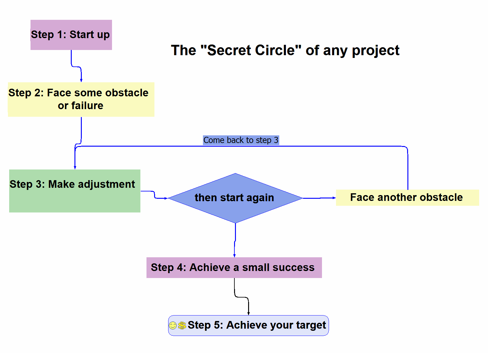
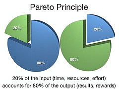
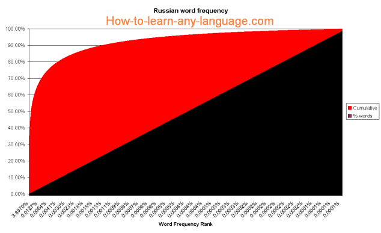
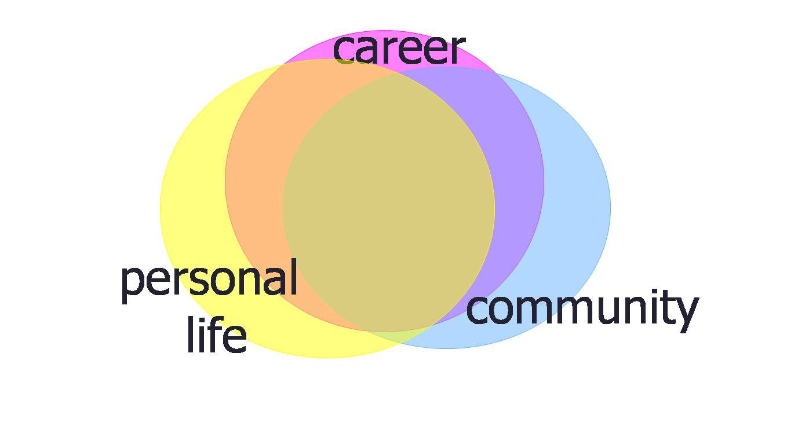
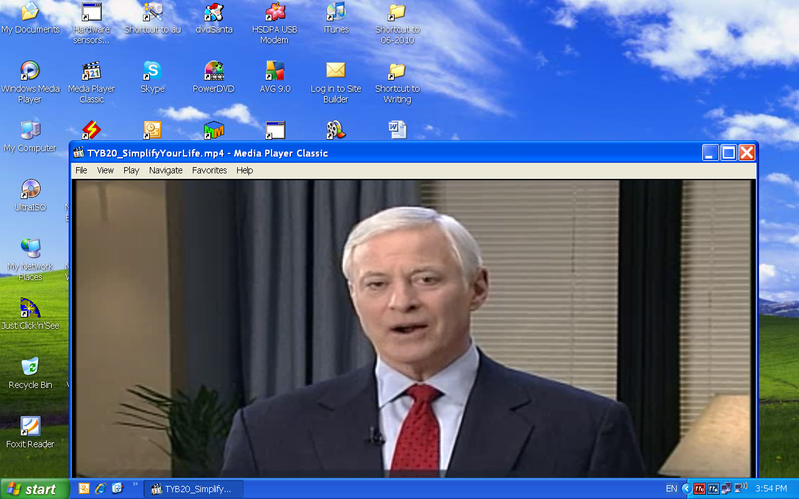

5 steps to speak a
new language
__________
(Hung Q. Pham)
5 STEPS TO SPEAK A NEW LANGUAGE
Copyright © 2010 by Hung Quang Pham
All rights reserved. No part of this book may be reproduced or
transmitted in any form or by any means without written
permission from the author.
Published in the United States by Cooper Cameron Publishing
Group, Oregon.
ISBN 978-0-578-06697-4
Printed in the United States of America
August 2010
2
Dedication
To Thu Nguyen, my wife and best friend.
To my parents, they are my true heroes.
3
This page intentionally left blank
4
Contents
Chapter 1 Things You Should Know Before Starting 7
Chapter 2 Pareto Principle and Core Vocabulary 16
Chapter 3 Build a Natural Language Acquiring
Mechanism 24
Chapter 4 1st input – The Free Reading Technique 35
Chapter 5 2nd Input – The Sound-Mapping Technique 56
Chapter 6 Writing – a Great Tool 69
Chapter 7 Develop Your Speaking Skills 76
Chapter 8 Polish Your Pronunciation 94
Chapter 9 Viewing grammar from another aspect 105
Chapter 10 Other Techniques For You To Accelerate 108
5
This page intentionally left blank
6
CHAPTER ONE
Things you should
know before starting
“If you want to shine tomorrow, you need to sparkle today.”
- HUNG Q. PHAM
peaking a new language is something a lot of people have
always dreamed of. They want it for various reasons. For
S those who are living in my country Vietnam, being able to
speak English well could dramatically change their career
prospects. For kids born in the US but having parents who
cannot speak English well, learning their mother tongue could
bring the family closer. Some people learn a new language for
their beloved, like my friend, Brian, who has fallen in love with
7
a Vietnamese girl. Well, I am not here to talk about why we
need to learn a new language, but how to do it. So why don’t we
just jump right into it?
Every player has a warm-up session before entering a game. We
are going to do the same. In the next section, we are going to
talk about some common myths about learning a new language.
You will see that although learning a foreign language is not an
easy task, you absolutely can master it if you know how.
The Myths
I am not born to learn a foreign language.
Most people believe that to learn a new language requires talent
of some kind. What we have usually heard from our parents is:
“My son has a great talent in foreign language” or the reverse
“My son is no good in foreign languages”. I hope you are lucky
enough to hear the first comment as it could give you huge
confidence and boost your learning efforts. If you got the latter
one, you might believe it and give up after your very first
attempt.
A foreign language is also called a second language. Let me ask
you a question: haven’t you been successful with your first
language? And if you were able to learn the first one, why can’t
you learn a second one?
When you first learned your mother language, you lacked many
tools. At two or three years of age, you had no dictionary, no
reading/writing skills, nor experience. Yet, you could master it.
Now that you’ve got a lot of tools around to assist you, why
can’t you just repeat that success?
The bottom line is that your belief matters.
I am too old to learn a new language
8
This is one of the most common complaints I have been
hearing from my students and friends. Many people, including
scientists, believe that kids are better at learning a foreign
language than adults. They also believe adults cannot absorb a
new language anymore.
It is true that kids seem to adapt more quickly with a new
language environment. Many reports support that idea.
However, you can also see that kids quickly get familiar with a
new language but, after a short period of time, they tend to slow
down to a normal learning rate. I first learned French when I
was only 11 years old and English when I was in my high
school. English had been one of my majors for many years
afterward until I left university. It was still important when I
started working. Several years after that, I still could not speak
English well. However, when I got older (of course, everyone
grows older than when he or she was in school), I achieved
much more success in only a few months than what I’d
achieved in all the years before that.
Steve Kaufmann is an American linguist; he can speak nine
languages (by now, he may have learned a few more). And he
started learning his ninth language when he was 59 years old.
It is not about how old you are; it is about how old you think
you are.
I must go to the country where people speak the
language I want to learn.
I agree that being in the country where people speak natively
the language you want to learn would help you a lot. But it is
not a must.
I have been in the US for six months to learn English. I found
that a lot of the “environment factors” I got there does exist in
Vietnam, my home country. I still remember my very first days
in the US; a Vietnamese-American friend of mine told me:
“You better watch television every day to improve your English
9
listening skills”. That was an honest recommendation. But it
shocked me because I came to the US hoping that this country
could help me skyrocket my English skills, not to watch TV.
If you are at home and want to improve your listening skills,
why not just watch TV?
In Chapter 10, I will tell you many other tactics to get a “native
speaking environment” right in your country.
Learning a new language is a long journey. It might
take your whole life to learn one.
If it takes your whole life to learn a new language, how many
lives do you think Steve Kaufmann or others who can speak
four or five languages had? In fact, many people, including me,
have been learning a new language for quite a long time but
never focused on it. It is as if you want to build your muscles by
lifting the 5kg-weights only three times a day. Results never
come that way. When it comes to learning a foreign language,
being focused is the key. If you focus in the right manner, you
can achieve mastery in a short period of time.
I must have a good teacher
Some people tend to delay things; I call them “delayers”. They
keep looking for good teachers even though they have no idea
what a good teacher looks like. I think every teacher has his or
her own strengths and weaknesses. The important thing is what
you can learn from them, not what you cannot learn from them.
Even a native speaker will have weaknesses in teaching their
own language. For example, sometimes, a native speaker cannot
understand clearly why a word is so easy for her to pronounce
but not for her students.
You don’t need a very good teacher, but you DO need a good
process.
10
Only smart people can learn new languages
It is true that when you meet someone who can speak one or
more foreign languages, you feel that the person is smart.
However, many studies show that it is learning a new language
that boosts your IQ, which means learning a foreign language
makes you smarter, not that you must be smart to learn a new
language. This finding is quite interesting, isn’t it? If you are still
concerned about how smart you are, the following findings
might excite you.
Research shows that our brain contains around 30 billion cells.
Every time we absorb or analyze information, new connections
are formed among these brain cells. These connections could
disappear quickly or be retained for a long period of time
depending upon how important the information is to you. It is
not the number of cells that determine the level of your
intelligence; it is the number connections that does. The
number of connections increases as your brain works and
decreases when you stop thinking or remembering things. If
you do math to count the connections possible, it is
unimaginable; it is almost unlimited!
Tony Buzan, a well-known human brain expert, estimated that
an ordinary person uses only around 3% to 8% of his or her
brain capability. A person who is considered unintelligent could
be using 2% of his or her capability. While those smart persons
could be using only 10% their brain potential. It means no
matter how much your IQ is at the moment, you are
somewhere between 2% to 10%. If you are in a marathon,
standing a few meters ahead of or behind the starting line does
not make much of a difference, but your continuous effort
does. There is much room for improvement. If this is true, your
next question is going to be how to be more intelligent?
I used to think that our brain is like a computer hard disk, that
if we squeeze too much information into it, some old
information will be replaced by the new information coming in
and be lost. I found that I was wrong. The truth is that if you
11
get more information, your ability to memorize increases
accordingly. You then can memorize more and at a faster rate.
On the contrary, if you think less, your ability to think will be
undermined. Our brain has a mechanism similar to our muscles.
If you regularly work out, your muscles will become stronger,
and conversely, if you don’t exercise, your muscles will grow
weaker. Research reveals an interesting finding that whenever
we face a problem and we try to find a solution, new
connections are formed within our brain making us a little
smarter. If we choose to stop thinking, we grow a little less
intelligent.
I have a neighbor who is a taxi driver. He once told me that he
did not like his job. When I asked him why not change to
another job, he insisted that he was a dumper and that he could
not manage to learn anything new. One day, when we were
enjoying a drink together at his home, waiting in front of the
TV for the World Cup football match to start, he challenged me
to play chess. Just so that you know, I am not a very bad chess
player. I used to defeat my father and his friends when I was
only 11 years old. Yet, I lost three matches continuously in just
15 minutes! When I was writing this section, my neighbor’s
image suddenly popped up in my mind, and I asked myself:
how could a good chess player be a dumper!
If sometimes you think you are not intelligent, think again!
Yes, you can learn a new language
I heard an interesting story when I took a course with Brian
Tracy, a go-to person if you are seeking success. It was about
Africa where there are a lot of elephants and mahouts. One day
a group of visitors came to see mahouts train their elephants.
They were surprised to see the mahouts use quite thin ropes to
tie the elephants’ legs onto a pole. It looked like the elephants
could break off the rope at any time. When the visitors brought
their question to a mahout working nearby, he explained: “An
12
elephant is tied by this small robe when she is just born. In the
beginning, she tries aggressively to escape. But all of her efforts
only result in painful marks on her leg; she is still too young to
break the rope. After a few days of attempting to break free, she
finally gives up. Even when she has grown into an adult and is
much larger in size, she never gives it another try again”.
Any of us could have suffered a failure of some kind when we
were young. A bad grade at school is just one example. These
failures have an impact on our beliefs about our ability. They
drive us to think that we cannot do certain things. Psychologists
call it “self-limiting beliefs”. As the name suggests, whatever
you think you cannot do, you cannot do it. However, it is not a
truth; it is just a belief. The only thing you need to do is to
change it. Yes, I mean change your belief!
So, is it difficult to learn a new language? I cannot answer it but
I am sure that learning a new language is a skill, not an art. An
art, such as painting, might require talent at some level, a skill
does not. Everyone can learn a skill. For example, if you’ve
never done push-ups, chances are that you would not be able to
do it more than ten. But if you practice regularly, within one
month, you could manage to make it 50 – 70; some people can
even make it a 100! However, imagine if I do not tell you this
and if suddenly you see someone do 100 times push ups, you
would think he must be special, wouldn’t you? Many people who
have heard me speak English with an American accent have
assumed that I must have been in the US for years. When I tell
them I have studied there for six months, they think that I am
quite special. They do not know that, not long ago, I had been
very normal.
Many people do not achieve success in learning a new language
due to one reason: they do not know the secret circle of any
project. The secret circle can be described in the following
figure:
13

As you can observe, most people assume there would be no
failure or obstacle on their journey. When they do face one (in
Step 2), they get frustrated, their initial enthusiasm and high
energy quickly go down. Some people do go to Step 3 where
they make some adjustment and try again, but they quit after
facing another obstacle. Some others do go to Step 4 where
they achieve success of some kind. But then, they simply get
satisfied with what they have achieved and stop putting more
effort. Only those who go to the final step will achieve their
target.
This circle applies not just to studying language but to almost
any field. If you get through all the steps, you can definitely
learn any language. And you can learn it fast with the tools and
techniques I am going to share with you in this book.
You need a big enough reason
Sometimes, people are not very clear about why they need to
learn the language they are aiming to. Maybe, you learn it
14
because your friends or your parents tell you to do so. Maybe,
you just want to put one more language on your CV believing
that it will make some difference. Many expatriates work in
another country and think that they should learn the local
language. Whatever reason you have, a foreign language is
something you cannot learn if you do not want it badly enough.
What I recommend you to do right now is to leave your book,
have a cup of coffee somewhere and ask yourself: why do I
need to learn this language? Think a bit further about what you
want to get in the future. Think about your dreams, wishes and
your plan. Where does the language stand in your plan? What
does the language have to do with your dreams? Do you really
need that language, and what benefits will you have if you
master it? Your brain is awesome, but it needs a good enough
reason in order to perform a difficult task. If you want to
quickly master the language you want to learn, start with a
dream. The moment you decide language is not something that
can stop you from making your dream come true, you have
almost done half of the journey.
15
CHAPTER TWO
Pareto Principle and
Core Vocabulary
“Learning without thought is labor lost; thought without learning is
perilous.”
- CONFUCIUS
f you have made the decision (and I hope you have),
congratulations! I have never seen anyone who has decided
I to learn a language fail. In this chapter, we are about to
discover one of the most important factors that decides
whether or not you can learn a new language in a short period
of time.
16
When it comes to language, most people will agree with me that
vocabulary is at the top of the priority list. Without vocabulary,
you definitely cannot hear, speak, or write. You are still able to
communicate without proper grammar or with poor
pronunciation. But you can do nothing without words.
Language is formed by words and the way words are put
together logically.
Nevertheless, have you ever asked: “How many words do I
need in order to speak well?” Not everybody asks that question.
Most people just start right away without realizing how far they
will have to go and how long it will take to get to the end of the
road. That is not very good when you have a long journey. You
will be more likely to reach the target if you have a map in your
hand, or know the way you have to go.
There are approximately 600,000 different words in English.
This figure varies among languages from 400,000 to 1,000,000
or even more. Let’s take a look at a dictionary. You will find
that an average one will have 300,000 – 400,000 different
words.
You could have been learning a foreign language for sometime
now. I do not know how many words you’ve got, but I am very
sure that the number of words you have studied is much larger
than the number of words you’ve retained. It may seem that
there is a “hole” in your mind through which new words keep
leaking out. Even though you have been trying to pick up new
words every day, what you retain doesn’t seem to make the
effort worthwhile. With 600,000 – 800,000 different words,
even if we assume that you keep learning new words everyday
and retain about 20 words per day (this is not a bad result at
all!), it results in 7,300 words a year (365 x 20). You do the
math!
Fortunately, life does not have to be that hard! Things in our
world are arranged by an interesting principle called the 80/20
principle. This was found by an Italian economist named
Vilfredo Pareto. That is why it is also called the Pareto principle.
17

Pareto observed that 80% of the lands are owned by 20% of the
population. He found that this number is true in many other
fields, as well. For example:
• 20% of the input creates 80% of the result
• 20% of the workers produce 80% of the result
• 20% of the customers create 80% of the revenue
• 20% of the bugs cause 80% of the crashes
• 20% of the features cause 80% of the usage
• And on and on…
In fact, the rate of 80/20 is rather a symbol than an exact
number. In many cases, it could be 90/10 or 95/5.
This principle became wel -known because thanks to it people
could decide what to put their efforts (time, money,
resources…) into in order to get the most results. Simply put,
18
work less and gain more. Don’t you want to spend less time but
get more results in learning a new language?
The great thing is that the Pareto principle is also true in
learning a new language. Even though the total number of
different words in English comes up to 600,000, only a small
portion of that number is used in American daily lives.
Shakespeare is known to be an author who used a wide variety
of words and phrases in his works. If you ever read him, you
will find many words that you would never use or even think of
in your life. Yet, statistics shows that he has used only a total of
approximately 20,000 different words in all of his works put
together.
How about that number in our daily lives? As early as the 1930s,
George Zipf (1935) had made influential proposals about the
statistical distributional properties of the lexicon, widely known
as Zipf’s Law. He researched various languages, including
English. He found that each word has a different frequency of
occurrence. In English, the word “THE” tops the frequency
ranking with 7.5%, “OF” following with 3.5%, and so on.
Amazingly, just 130 words make up 50% of occurrences.
19
Other studies show that Americans use around 2500 – 3000
most common words in their daily lives. The good news is that
these 3000 common words build up more than 95% of the
content in any conversation, telephone call, e-mail or even
books and newspapers.
In other words, instead of learning 600,000 different words, you
can focus on 3000 most common words but still understand
95% of all conversations, e-mails, newspapers and books. If you
take 3,000 and divided it by 600,000, the result is 0.5%. These
most common words belong to what we call the core
vocabulary. Some linguists believe that the core vocabulary
should contain 4,000 instead of 3,000 words. Others think it
should be 2,000. But I think the exact number is not very
important, because the bottom line here is that you will be able
to master communication in your new language by focusing on
this core vocabulary.
Some of my students feel rather uncomfortable with this
recommendation, as they want to fully understand (100%) all of
the content they are exposed to. They do not want to lose the
remaining 5% content by understanding only 95%. Yes! I totally
agree with them. I am not saying that you should understand
only 95% of the language you’re learning. I am talking about
where to focus first. After mastering the core vocabulary and
understanding most of the language, no one can stop you from
discovering further to enrich your vocabulary. However, if you
seek perfection in the very beginning, you will be scattering
your time and effort in a wide area. Unfocused effort will lead
to no results for too long and make you tired. Long ago in
China, Sun Tzu, a well-known strategist, talked about a
technique for the minority to defeat the majority. The technique
was to focus all the effort on the weakest point of your enemy.
You should use the same strategy for learning a new language.
Another reason for you to focus on the core vocabulary is that
in order to remember and be able to use a specific word you
will have to be exposed to that word several times. Many
linguists believe that a person will need to get exposed to a
20

word 5 to 10 times to master it. That is why it is not a good idea
at all to spread your efforts thin.
Basically, almost every language in the world follows the same
pattern in that a small percentage of the total number of words
make up the core vocabulary of any particular language.
However, different languages may have different total number
of words leading to varying sizes of their core vocabulary.
Below is an illustration of the word frequency distribution and
core vocabulary in Russian (source: www.how-to-learn-any-
language.com).
The result is that:
the 75 most common words make up 40% of occurrences
the 200 most common words make up 50% of occurrences
the 524 most common words make up 60% of occurrences
the 1257 most common words make up 70% of occurrences
the 2925 most common words make up 80% of occurrences
the 7444 most common words make up 90% of occurrences
the 13374 most common words make up 95% of occurrences
the 25508 most common words make up 99% of occurrences
21
Okay, so you have got the first secret in my second language
learning process. However, I have only mentioned the size of
the core vocabulary. We do not know yet what words go in
there. Well, if you run a search on the Internet or look at some
language learning book, you would probably find lists of words
that form the core vocabulary for your target language. On
www.wiktionary.org people even have frequency lists for
various languages. A friend of mine collected a list of 1500 most
common words in English as he was trying to improve his
English skills. If this is the first time you are seeing such a list,
chances are that you might be tempted to learn by purely
memorizing it. Well, you can try doing so if you want. But I am
sure that it will not work! Memorizing a list of words out of
context is one of the worst methods in learning a new language.
Being able to memorize it does not mean you can use it. And
when native speakers talk to you, you might not understand
even though they speak using those words! A number of second
language learners do know about the existence of core
vocabulary, but they do not know how to exploit it effectively.
They do not know how to approach it properly. The main
reason is that you need to acquire a language, not purely
learn it, and you absolutely cannot memorize a language.
Please don’t worry about the concepts “acquiring” and
“learning” yet, I will explain them later in the next chapter.
Now, please be a bit patient, as I seem to be rambling on about
this topic. This idea is so important that I would like you to
fully get my point before introducing you to the next step. In
the next chapter, I will be instructing you how to acquire the
core vocabulary of the language you’re learning and to master it
confidently.
Before moving to the next chapter, I would like to introduce a
concept somewhat similar to core vocabulary – core phrases.
As its name suggests, core phrases are the most common ways
of putting words together. In other words, they are the most
common sentences and phrases. This is the second reason why
you cannot learn a language by just memorizing its core
vocabulary list. The idea is simple: you cannot speak a language
22
if you know the words but don’t know how to put them
together. Core phrases are just as important as core vocabulary.
They will help you master the listening, speaking and writing
skills in a new language more quickly by recognizing and
mastering whole phrases instead of individual words. Let me
give you an example:
In everyday English, you would normally say: “I’ll be right
back”. It means that you are about to go somewhere and will
return shortly. You rarely use any other way to express this idea
when you speak. If a learner of English tries to memorize
individual words and then tries to remember how to put them
together, it will not be as efficient as memorizing the whole
phrase. In fact, it is easier to memorize and recall a long phrase
or sentence than a single word. This fact is especially true when
developing listening skills because you will be more likely to
recognize and understand a long phrase than a single word. It is
just like listening to a song. If I play only a few sounds, you
might not be able to recognize which song it is. But the job will
be much easier if I play a longer piece of melody.
The same thing happens when you speak. If you use common
phrases when you speak, native speakers will be more likely to
understand what you want to say although your pronunciation
may not be really good yet. For example, if I asked an
American: “is your health good?” as an opening remark, he
would not understand. It is simply because Americans do not
say it that way, even though the sentence is correct in terms of
grammar. In other words, the sound in this case is not familiar
to them in this particular context. However, if I say: “how are
you?” or “how are you doing?” people will understand
immediately no matter how bad my pronunciation is.
In short, learn the way native speakers speak; learn the common
phrases and sentences they use. That is the fastest way to
communicate effectively in a new language. I call it “take the
whole bundle” technique. Now, let’s move on to the next
chapter and discover how you can quickly absorb the core
vocabulary!
23
CHAPTER THREE
Build a Natural
Language Acquiring
Mechanism
‘A journey of a thousand miles begins with a small step”
- LAO TZU
24
n the previous chapter, we talked about the 80/20 rule.
Now, you have got some idea about the workload, which is
I not as huge as you might have thought. In the following
pages, I am going to answer your question: How do you
learn vocabulary? Where do you find those common words?
How do you approach them?
Here is my answer: We are going to build a mechanism so that
you can acquire the common words in the core vocabulary of
the language you want to learn in a natural way. In other words,
we are going to build a system that can attract the core
vocabulary you are exposed to. It sounds like hype, doesn’t it?
Before going into the details of the system, I would like to
explain a bit more how the human brain learns a language, the
difference between learning and acquiring, and the concepts of
input and output.
How does your brain learn a language?
In his book Second Nature Brain Science and Human Knowledge,
Nobel Prize winning author Gerald Edelman reveals a lot of
interesting findings about the human brain. A particularly
interesting revelation was the mechanism on which brain
functions. When comparing the human brain with the
computer, he found that the two worked on very different
mechanisms. Unlike computers, our brain cells (neuron)
function by a mechanism that he called “pattern recognition”
and “association” and not on logic.
In the beginning, these concepts might confuse you; they
certainly confused me. You can think about “pattern
recognition” and “association” as the way in which the brain
starts to draw a new map as you learn a new language. The input
signals you get via your eyes (reading) and ears (listening)
stimulate the cells in the language processing area of your brain.
As you continuously receive inputs, repetitive signals create
“marks” or “traces” in your cortex. The sets of traces and marks
25
then form something like a “language map” in your brain.
When a guy speaks a new language fluently, it means his new
“language map” has been clearly formed. As he hears or reads
something in the language, his brain recognizes the input signals
by “associating” them to the map in his brain.
This mechanism explains a very common situation in which a
learner fails to hear a certain word or phrase while listening to
native speech. When he looks at the transcript, he surprisingly
finds that he has already learned the word or phrase before. It
frustrates the learner, as he does not know why he cannot
recognize the word or phrase, even though he has learned it. If
you are in such a situation, you would likely think: “listening to
a foreign language is so difficult!”
In most cases, the problem lies with your input. The two most
common problems are:
1. You have learned the word only in its written form but
have missed the sound form. In this case, your input
lacks the “sound” component. Therefore, the language
map in your brain is missing one part of the “data”. So,
when you listen to the “sound” spoken by a native
speaker, there is no “source data” in your brain for it to
“recognize” and “associate” what it just heard, and you
fail to hear the word or phrase.
2. You have heard the “sound” of the word when you
learned it, but the “sound” you heard was not correct as
it was spoken by a non-native speaker. It means that the
“map” has been incorrectly drawn. So, your brain still
cannot recognize it when you hear the word spoken by
a native speaker.
I am not going to discuss listening skills further in this section
(although I know that listening is one of the most irritating
parts of foreign language learning for many). We will talk more
about it later. Now, let’s discuss further our super weapon, the
brain.
26
After gaining some understanding of the human brain, linguists
conducted further research on the various ways to approach a
new language. They found that there were basically two
approaches - learning and acquiring.
Learning happens when a learner consciously puts his or her
efforts into studying or memorizing some detail, such as a word,
phrase or grammatical structure, of the new language. He or she
might review it sometime later or never (I belong to the second
category ☺). Below is an example of a typical learning approach
that we can observe in many foreign language learning classes.
Teacher says:
• Listen to me and then repeat (normally the whole class
repeats altogether)
• Let’s identify where the subject is, where the object is
and what tense is used…
• Open your book, page number… and do the exercise
number…
• Today, we are going to learn and memorize the
following words (it is normally a list of words)
• Open page number… in your book and translate the
first paragraph
• Let’s underline the subjects (and/or objects) in this
paragraph.
And on and on…
The learning approach has the following disadvantages:
• It does not create excitement; excitement is an
important factor in studying a new language.
• If the teacher is not a native speaker, the “sound” input
may not be 100% correct.
• Although lectures might be sophisticatedly prepared,
many words introduced and explained in a class may not
27
be the most common words. The reason is that when
the whole class is assigned a paragraph for translation,
the teacher would normally explain all the new words
emerging, no matter whether they are common words
or not. Students then try to memorize all of them. This
process, therefore, takes time and is not efficient.
The acquiring process is different. It happens when learners are
exposed to a large amount of input through reading, listening,
observing or getting involved directly in the new language
environment. The learners then unconsciously remember the
details that attract their attention or that they feel are important.
In other words, acquired details are the ones that remain in the
learners’ mind after they get exposed to a certain amount of the
new language. The acquiring process is similar to the way kids
learn their mother tongue.
However, not everything can be learned effectively using the
acquiring approach. Some topics, such as sentence structure,
could be learned more effectively using the learning approach. In
the next chapter, you will see that most of the techniques that I
use are arrangements of both learning and acquiring approaches.
Input and output
No matter which approach you use, learning a language consists
of two basic parts: input from reading and listening and output
in the form of writing and speaking. Several years ago, I joined
an English class taught by a teacher who was a native speaker of
the language. She was focusing on making the students talk to
each other in English, whether in groups or in pairs. She also
arranged time to talk directly to us in English. In the beginning,
the class was quite exciting as we felt that we could start to talk
using a new language. However, since we did not have much
vocabulary to express more complex ideas, we soon got bored
repeating the same simple sentences, such as “it is raining”,
“have you had dinner?” “the weather was nice yesterday”… We
28
could not express more complicated ideas just by practicing
with each other.
Some recent studies on language learning techniques help me
understand why the method used to teach us in that class did
not work. It was not efficient because students in the class did
not have enough input yet. When we did not have much input,
forcing us to produce too much output was not a good
approach. If you observe the way a kid learns to speak his
mother tongue, you will notice that he starts receiving inputs
long before he can speak the first word. The evidence points to
the possibility that kids may be able to understand their parents
from a very early stage, much before they start to speak. So we
must acquire input before being able to produce output. This
finding may make you conclude that we should focus on getting
input by reading and listening for a period of time, then move
on to writing and speaking skills. This is not wrong and many
learners actually do so. But is it the best approach? I do not
think so. First, I believe that working this way makes the
learning process longer as you have to separate the two
processes. Second, you are not sure how long you’ve to wait
until you can start producing output. Will the output come
automatically as it happens with the kids? I believe it will not.
Kids produce output automatically because they have no choice
other than their mother tongue and they have to produce
output in order to communicate. While learning the second
language, we are not in the same situation.
Getting input and producing output have a mutual impact. In
other words, if we organize input and output well, we can
expedite our learning process. Basically, producing output helps
the learner quickly consolidate what he has got from acquiring
input (reading, listening and watching). In the next chapters,
you will see how we can focus on both input and output
strategically.
29
Massive input and selective acquisition
As we have mentioned, one of the biggest mistakes that learners
make is to try to memorize a list of words or phrases in the new
language. Memorizing a list will not help you retain the words
for long. No matter how hard you try, you will forget them
quickly.
When it comes to learning a new language, getting massive
input is the key. When you get massive input, your brain will do
its job to acquire the most common words and phrases. The
basis here is quite simple. In order to possess and master a word
or phrase, you must have the following factors:
• the context in which the word or phrase is placed
• the content and topic to which the word or phrase is
related
• the emotion and/or sense of the speaker
• the other common words that go along with that word
or phrase and the way they are put together (common
structures)
It is very hard to have the above factors in place when you use
the learning approach. Even if you proactively use a
comprehensive dictionary, it is time consuming and inefficient.
In addition, examples in dictionaries do not belong to a focused
topic. It just does not work.
Our basic theory here is that when we are exposed to massive
input, the factors listed above, such as context and topic, will
naturally come to us. These factors help us clearly understand
the meaning and usage of words and phrases and help us
remember them for a longer period. If my explanation here is
not easy to follow, please don’t worry too much about it. You
don’t need to understand its essence; just follow my techniques
and you will see the results.
30
If you observe those who can speak a second language fluently,
you will notice that they did go through the massive input
getting and selective acquisition process. I have a friend who
stays close to the Chinese border. Every day, she’d go to the
marketplace on the border where Chinese and Vietnamese
people trade with each other. She has no problem speaking
Chinese at all. However, I assume that you do not have that
kind of environment. Even if you do have such an
environment, it will still take you quite a long time to learn a
new language in a purely natural way. It will definitely be much
longer than the period of 6 months that I am promising.
If so, what do I really mean by getting massive input?
As I mentioned earlier, when you are learning a new language,
your brain is “drawing” a new language “map”. Our strategy is
to expedite the process by proactively “drawing” it without
waiting for the brain to draw the map in a natural way. You
make the “marks” and “traces” clearer by going back and forth
over those “traces” until they become a clear map. The most
common words are like the big intersections where various
traces pass through. In the early stages, this map will not be
clear yet, but after getting more and more inputs, the map will
emerge clearer. Then, you will easily recognize the roads,
which is the essence of listening. When the map becomes
clearer, you can “show people the way” to go somewhere. In
other words, you can express your ideas by speaking in the
new language.
Therefore, getting massive input continuously for a
short period of time is the basic step to acquiring
the most common words and phrases. In other
words, exposure to massive input is how you can
penetrate the core vocabulary treasure.
In fact, this concept is not new and is applied not only in the
field of language learning but also in other subject areas. I still
recall the time when I was studying at the university. It was very
difficult for me to remember the details in those information
31
rich subjects, such as History of Economics, Religion and
Philosophy and so on. I tried to memorize the information in
the text books without success. As recommended by a friend, I
stopped trying to memorize the textbook and went to the
school library. I looked up several other books on the same
topic. Amazingly, after reading three or four more books on the
same subject, I could easily remember all the information in the
textbook. The good thing was that I did not have to memorize
facts; I just read the books in a painless way. Let me illustrate
this for you. If I gave you a shovel and asked you to dig a hole
10 feet in depth but only 5 inches in diameter, you would not be
able to do it. You would need a bigger diameter in order to dig
in deeper. The same thing happens when you want to memorize
things. You need more information in order to remember a
little. If you want to memorize a book, read four more books
on the same topic!
Let’s come back to our language learning issue. Once you
understand the idea of getting massive input, you will start
thinking about where to get it. Below are some of the most
common sources I have used when I learned English. Such
sources are available in other languages too:
• Foreign television channels
• Books and newspaper written in English
• Foreign radio channels
• Online forum communicating in English
• Expatriates living in my home town. You can easily
make friends with them. If you don’t know how, I have
some tips for you in the Chapter 10
• Friends online
In the Internet age, the problem we are facing is not the lack of
information but too much information. You receive too much
information everyday about courses, documents, reports,
websites, forums, etc. The important thing is to select and use
the information effectively. A good source of input for learning
32
a new language should have one or more of the following
attributes:
• be on a topic that interests you, preferably a topic you
are passionate about.
• be up-to-date so you can relate to things that are
happening.
• provide useful information. Why limit yourself to
learning only the language? Gather more knowledge at
the same time!
• contain hot news
• not be too hard for you to understand.
Take advantage of your favorite field or topic
So far we have discussed the basis and mechanism of how you
learn a new language. We have also talked about the potential
reasons why you may have learned it in an inefficient way and
what approach we should use. Right from the next chapter
onwards, we will actually look into the techniques I’ve
mentioned off and on earlier. However, the first thing you need
to do is to select your favorite subject area and topics. Actually,
this is very important to a language learner because motivation
is the key to success. If you do not like what you learn, you will
be less likely to succeed. Selecting favorite topics in your field
will keep you be excited and motivated every time you sit down
to learn. In addition, it will be more interesting when you get
more information in your area of expertise.
Your concern might be: “But I want to speak the language in
general; what happens if I focus just on a specific field? How
can I speak on another topic?” Don’t worry about it yet! Once
you can master a topic, such as “commerce”, you will easily be
able to master other topics. It is just like if you can ride a
bicycle, it will take you only a few more days to ride a
motorbike. Or if you can ride a motorbike with automatic gears,
33
you can easily master manual gears with a little practice. So, if
you’ve chosen your favorite topics to study, let’s launch into the
techniques.
34
CHAPTER FOUR
1st Input
The Free Reading
Technique
“Some people know how to teach, and some know how to do.”
- LINDA PIERCE
f you have selected your topic as instructed in the previous
chapter, it is time to start right now. In the next pages, I will
I instruct you how to get the 1st input by using a technique
that I call the Free Reading technique.
35
Free Reading Vs. Comprehension Reading
As its name suggests, this technique is different from the
Comprehension Reading section that you usually find in a
textbook. A typical Comprehension Reading section is a half-
page paragraph, sometimes longer or shorter depending on the
intention of the composer. When reading it, you are required to
underline new words. In many books, the author might already
do this job for you. You would usually check the meaning of
these words, try to memorize them. There could be several
questions underneath the paragraph for you to answer. You
would probably translate this paragraph into you mother tongue
and on… and on… Basically, this method is more a learning
approach.
To give you a closer look at the Comprehension Reading
technique, it is best to use an example for illustration. Please
note that all of my illustrations are in English, as English is my
second language. If you are an English native speaker looking to
learn any other language in the world, this technique (and the
other techniques, as well) will still be valid. Now let’s consider
the following example:
***
She's not normally camera-shy but a tired-looking Sarah Ferguson avoided
reporters on her arrival at Los Angeles airport. And again later when she was
due to be the star of a Hollywood red-carpet event, honoured by a
childrens' charity for her humanitarian work. But her efforts to help
others have been overshadowed by her attempts to help herself and
Ms Ferguson sneaked in to collect her award.
She has said she's sorry after a newspaper secretly filmed her offering access to
Prince Andrew for half a million pounds. There's no suggestion he knew of her
plan.
In the past Sarah Ferguson has been an author, TV presenter and film producer.
But her media company recently collapsed with large debts. She
admitted money problems but said they were no excuse for a
36
serious lapse in judgement. This attempted deal, though not illegal,
may have gone too far.
Rajesh Mirchandani, BBC News, Los Angeles
Vocabulary:
camera-shy
red-carpet event
humanitarian work
overshadowed by
to help herself
sneaked in
collapsed with large debts
admitted money problems
a serious lapse in judgement
have gone too far
***
This is a language learning section I borrowed from the site
Learning English published by BBC Vietnamese. This website is
dedicated to helping Vietnamese people to learn English.
Overall, this is a useful website. I am not doing a critique here.
My intention is to show you the difference between the two
reading techniques that we have been talking about so far. As
you can see in the example above, the words that are considered
“important” are underlined or in bold, then followed by notes
explaining the meaning of each word. If I were to study this
reading section in my English class, the teacher would write
these words onto the board, explain their meaning, instruct how
to pronounce them etc. This method is very common from the
beginner to advanced levels. When using this approach, the
teacher assumes that you already know all other words. The
underlined words or those in bold are focused upon because
they are supposed to be more complicated and more difficult
for the learners.
Okay, now let me ask you a question: are you sure that all
those difficult and “important” words listed in the
example are worth your time and effort? Recall what
37
we talked about the Pareto principle (80/20 rule) and core
vocabulary in Chapter 2: our strategy is to focus on the core
vocabulary which constitutes just 5% of the whole vocabulary
but brings in 95% results. If so, you want to make sure that the
words you spend time on should be the most common words,
not the most uncommon ones. Coming back to the example,
you could now see that the Comprehension reading method
tends to drive you to focus on the most difficult words. My
next question is: are the difficult words the most common ones?
Unfortunately, the answer is no! Most times, the shorter and
simpler words are more common than the long and
complicated ones. To double check this judgment, please visit
the website http://wordcount.org/main.php. This website
provides rankings based on how common a certain word is.
Although I cannot vouch for its reliability, at least it can give us
a rough idea.
In the “Find Word” box of the website, enter the word you
want to check. If you try some word like “humanitarian” (from
the list in the example above), you will see it’s ranked 11507.
This rank tells you that the word is far less common than those
of the core vocabulary (which are the 3000 most common
words).
38
If you want to explore word frequencies more, you can visit
http://en.wiktionary.org/wiki/Wiktionary:Frequency_lists.
However, this site does not contain a search box for you to type
in the word you want to look up, so you must find it manually.
But if I were you, I would not waste time on this issue any
more. I would care more about how to get my core vocabulary
and how to master it.
Let’s come back to the example and see how we can approach it
in a more efficient way. We are going to remove all bolds and
underlining from the words in the passage.
***
She's not normally camera-shy but a tired-looking Sarah Ferguson avoided
reporters on her arrival at Los Angeles airport. And again later when she was
due to be the star of a Hollywood red-carpet event, honoured by a childrens' charity
for her humanitarian work. But her efforts to help others have been overshadowed
by her attempts to help herself and Ms Ferguson sneaked in to collect her award.
She has said she's sorry after a newspaper secretly filmed her offering access to
Prince Andrew for half a million pounds. There's no suggestion he knew of her
plan.
In the past Sarah Ferguson has been an author, TV presenter and film producer.
But her media company recently collapsed with large debts. She admitted money
problems but said they were no excuse for a serious lapse in judgement. This
attempted deal, though not illegal, may have gone too far.
***
Since this paragraph is quite short, I am going to search for
another article about the same topic to make my point clearer.
Thanks to Google, I have found the one below:
39
***
Sarah Ferguson was caught on tape accepting cash from an undercover journalist
in exchange for access to her ex husband, Prince Andrew, Britain's special
representative for international trade and investment.
"Five hundred thousand pounds [approx $750,000] when you can, to me... [to]
open doors," Ferguson, 50, says on videotape during a meeting at a swanky
London apartment, according to the British tabloid News of the World, which
also printed a transcript of the conversation.
"Then you open up all the channels, whatever you need, whatever you want... We
can do so much," she went on. "If you want to meet him in your business, look
after me and he'll look after you."
Ferguson, a former Weight Watchers spokeswoman, appears to ask the reporter,
who is posing as an international tycoon, for $40,000 in cash, and $720,000 by
wire transfer "if you want a deal with Andrew... and then you meet Andrew."
After a pile of money is show on a coffee tape, the duchess puts her head in her
hands (it's unclear if she's smiling or crying), and then moments later, hauls away
a black computer bag stuffed with the cash, which is described as a fee for "doing
the big deal with Andrew."
Ferguson says that Andrew was aware of the deal, but the newspaper says he was
not.
"I will listen to the friendship talk between you two. And then I do it... You two
talk. I listen. Then I activate," she said. "He meets the most amazing people.
And he just throws them my way."
Ferguson wed the Duke of York, who is fourth in line to the throne, in 1986, but
they split 10 years later. They are parents to two daughters, Beatrice, 21, and
Eugenie, 20.
"He's so amazing," Ferguson says on the videotape. "We're the happiest divorced
couple in the world."
The royal family was unavailable to comment. Fergie said in a statement that she
had money problems but "that is no excuse for a serious lapse in judgment, and I
am very sorry that this has happened. I very deeply regret the situation and the
embarrassment caused."
40
Fergie has lost millions in business ventures (including the closing of her
promotional firm, Hartmoor, last year, which she poured $2 million into), but still
preferred to travel first class and in a chauffeur-driven Bentley.
Her $3 million contract with Weight Watchers expired in 2007, and according to
the Times of London, she had to scale back her lavish 50th birthday party to a
family meal because she couldn't afford it.
***
Now, if you screen these two articles manually, you will find
some words that appear 2, 3 or even 4 times. They are reporter,
attempt, newspaper, film, access, deal, family… The phrase say on the
videotape shows up twice. So that you can find them quickly, let
me underline them in the articles as below:
***
She's not normally camera-shy but a tired-looking Sarah Ferguson avoided
reporters on her arrival at Los Angeles airport. And again later when she
was due to be the star of a Hollywood red-carpet event, honoured by a childrens'
charity for her humanitarian work. But her efforts to help others have been
overshadowed by her attempts to help herself and Ms Ferguson sneaked in to
collect her award.
She has said she's sorry after a newspaper secretly filmed her offering
access to Prince Andrew for half a million pounds. There's no suggestion he
knew of her plan.
In the past Sarah Ferguson has been an author, TV presenter and film
producer. But her media company recently collapsed with large debts. She admitted
money problems but said they were no excuse for a serious lapse in judgement. This
attempted deal, though not illegal, may have gone too far.
***
Sarah Ferguson was caught on tape accepting cash from an undercover
journalist in exchange for access to her ex husband, Prince Andrew, Britain's
special representative for international trade and investment.
41
"Five hundred thousand pounds [approx $750,000] when you can, to me... [to]
open doors," Ferguson, 50, says on videotape during a meeting at a
swanky London apartment, according to the British tabloid News of the World,
which also printed a transcript of the conversation.
"Then you open up all the channels, whatever you need, whatever you want... We
can do so much," she went on. "If you want to meet him in your business, look
after me and he'll look after you."
Ferguson, a former Weight Watchers spokeswoman, appears to ask the
reporter, who is posing as an international tycoon, for $40,000 in
cash, and $720,000 by wire transfer "if you want a deal with Andrew... and
then you meet Andrew."
After a pile of money is show on a coffee tape, the duchess puts her head in her
hands (it's unclear if she's smiling or crying), and then moments later, hauls away
a black computer bag stuffed with the cash, which is described as a fee for
"doing the big deal with Andrew."
Ferguson says that Andrew was aware of the deal, but the newspaper says
he was not.
"I will listen to the friendship talk between you two. And then I do it... You two
talk. I listen. Then I activate," she said. "He meets the most amazing people.
And he just throws them my way."
Ferguson wed the Duke of York, who is fourth in line to the throne, in 1986, but
they split 10 years later. They are parents to two daughters, Beatrice, 21, and
Eugenie, 20.
"He's so amazing," Ferguson says on the videotape. "We're the
happiest divorced couple in the world."
The royal family was unavailable to comment. Fergie said in a statement that
she had money problems but "that is no excuse for a serious lapse in judgment,
and I am very sorry that this has happened. I very deeply regret the situation and
the embarrassment caused."
Fergie has lost millions in business ventures (including the closing of her
promotional firm, Hartmoor, last year, which she poured $2 million into), but still
preferred to travel first class and in a chauffeur-driven Bentley.
42
Her $3 million contract with Weight Watchers expired in 2007, and according to
the Times of London, she had to scale back her lavish 50th birthday party to a
family meal because she couldn't afford it.
Again, if you want to double check whether these words are
really common, check it out on
http://wordcount.org/main.php. Here, if you type the word
“attempt” in the search box, you will get the frequency ranking
of 882.
This result shows that “attempt” does belong to the group of
the 3000 most common words. Logically, the words that appear
more frequently in a group of articles should be the more
common words. On the contrary, the words that are in bold or
underlined in the Comprehension Reading section of a text
book, such as camera-shy, red-carpet event, humanitarian work are
difficult but not common words. With my experience, I am
quite sure that you would rarely use them in many
conversations.
Now that you have got a rough idea about the approach I am
going to share with you, you might be wondering how to really
catch those common words. Screening reading material to find
43
the repeated words as I did in the example above is doing it the
hard way. We are going to use a much better method that I call
the Free Reading technique. In this technique, there will be no
questions underneath a paragraph, no translation into your
mother tongue, no underlining… Yet, it is designed to bring
to you the most common words. If you follow this technique,
you must be prepared to read a lot. While reading, you might
not understand 100% of the content. You might feel a little bit
uncomfortable as you will be tempted to understand the whole
content. However, you will shortly adapt to this new method
and then start to acquire a huge amount of core vocabulary
brought in by this technique.
The Free Reading Technique
Now, to practice the Free Reading technique, please go through
the following steps:
Step 1: Select appropriate materials for you to read.
There are many sources of language learning materials available
out there on the Internet and in bookstores. We are not going
to use any of them. We will be using materials that are used by
native speakers in their daily lives and not those specifically
designed for learning purposes. These materials include:
1. Academic (or non-fiction) books: Just look for
books that belong to your area of expertise or interest
written in your target language. For example, my area of
expertise is business administration, so I looked for
books on marketing, selling, management and so on
written in English, my target language. If you cannot
find one at the local book stores, please do a search on
the Internet. Since my target language was English, I
could easily find many options on online bookstores,
such as Amazon or Barns & Noble. However, if your
target language is some thing like Chinese or Korean,
44
you may need to look for an online bookstore in that
language. For example, simply run a search for: “online
book store in Chinese”, and you would easily find a
useful website, such as
http://www.hanban.ca/bookstore
2. Fiction books: If you are a fan of stories, this will be
a great source for you. The biggest advantage of stories
is the compelling content of the book itself. As I’ve
mentioned earlier, motivation is the key to learning a
new language. Reading compelling stories would excite
you much more than reading boring paragraphs in
language textbooks.
3. News: This is also a great source as it has updated and
useful information. It helps you relate to your daily life
and get the sense of the content. In addition, hot news
normally comes along with comments and replies that
you can utilize to really get involved in the topic and
practice your output (writing and speaking).
4. Online forums: You can opt to be a member (for
free) of an online forum discussing your favorite topics.
You just need to know the name of the topic written in
your target language; then, do a search on Google.
There should be plenty of options for you. When I was
studying English, because I loved photography, I went
to sites like:
www.thephotoforum.com/forum.
www.photoforum.com
www.photozo.com/forum
…
Because I was going to open my own business, I also
went to forums like:
www.youngentrepreneur.com/forum/index.php
45
www.entrepreneursforum.net
…
You can do the same in your target language.
5. Other sources: You can look for types of sources
other than the ones already mentioned. However, to be
a good source, it should satisfy the following criteria:
- It should be written by native speakers.
- It should have one or more of the attributes of good
input mentioned in Chapter 3.
- Its content should be large enough, at least, 3 – 4
pages on one topic. As you can see, the sources
mentioned above are all materials with massive
content, such as books and stories. News can also
be considered massive material, as you can bundle
related news into a group so that it becomes
massive. Similarly, articles or posts on forums are
normally updated and commented upon by forum
members. Since the strategy we use is based on
massive input, I don’t prefer reading materials in
language textbooks because they are usually quite
short and belong to unrelated topics. This does not
support the massive input concept. In addition,
reading materials in textbooks may not match your
area of interest. It probably makes you feel bored.
Step 2: Relax and just… read.
Okay, let’s say I am going to read news, and I am interested in
doing business. Since my target language is English, I will run a
search on Google for business news. Well, I find the “Business
Week”.
46
Business Week is a renowned source; it must contain interesting
information on business. Why don’t I just give it a try?
47
Information on this website is categorized under various sub-
topics, such as Finance, Technology, Innovation, Management,
Small Business and Global. Since I am an entrepreneur, I will
take a look at the “Small Business” section. In this section, I
pick up an article named “Use storytelling to maintain customer
interest”, hoping it could give me some tactic to sell more of my
products and make more money. Remember to put your area of
interest at top priority; you want to read something that is
useful and compelling to you.
Before reading, please have your dictionary software ready to
use. Here, I am suggesting you use a CD or online version of a
dictionary for checking word meaning, as you want to do it as
quickly as possible. Please do not use the regular book version
of a dictionary, as it will slow down your reading speed.
Another favorite tool of mine is a software piece called “Click
& See”, which I use to see the meaning of a word in my mother
tongue in just one click. If you can get a similar one, utilize it.
48
Now that you are ready, let’s start to read from the beginning.
Every time you face a new word (or a word whose meaning you
do not remember), use your dictionary software to check its
meaning quickly and then continue to read. Here are the big
DON’Ts when you are reading:
- DON’T take note of any word (including new words,
difficult words, long words...). Just don’t take any note.
- DON’T force yourself to remember any word.
- DON’T underline or bold any word.
Again, do not take any note! Just read, check the meaning of
any word you want to and do nothing else! Then, you want to
read as fast as possible. While you are reading, sometimes you
do not understand some word even after checking its meaning.
It is fine; a dictionary cannot help you understand everything. In
that case, you just go ahead and ignore that sentence. After
reading a few sentences (maybe, just 1 or 2 sentences), you
might see a certain word that you have just checked the
meaning of a minute before. However, you might not
remember its meaning (because you didn’t take note). Well, no
problem! Just relax; go ahead and check its meaning again using
your software. Then, continue to read. You will likely see that
word again, and you may still not remember its meaning. Just
use your dictionary software again and… continue to read.
Well, after seeing a certain word 3 – 4 times and checking its
meaning over and over again, I am sure you will remember it
the next time you see it. And then… guess what happens? You
would have learned a word from the core vocabulary. Here is
the key: those words that you have seen over and over again
are the most common words. The methodology here is very
simple; the most common words must show up repeatedly.
After reading a long piece, you will forget many words and
retain some words. Those that you forget are uncommon
words, while those that you retain are more common.
49
Why could you get so much from the two
simple steps of the Free Reading technique?
I call it the art of simplicity. It is so simple that some of my
students even doubt its effectiveness. However, one does not
need to be very smart to see the benefits that this technique can
bring to learners.
Firstly, the Free Reading technique naturally drives your focus
to the most common words and phrases, and at the same time,
helps you save time by not making you struggle with the
uncommon ones.
Secondly, following this technique, you don’t need to force
yourself to memorize vocabulary. You would naturally retain
vocabulary when:
- you see a certain word over and over again
- you meet a certain word in various contexts and in
different sentence structures. This helps you understand
the real meaning of that word and gives you a sense of it
- sometimes, you find that a certain word usually occurs
prior to or after another word. This helps you
remember how to use it in combination with another
word.
We have already mentioned the factors that you need in order
to really possess and master your vocabulary. To repeat them
here, you need:
- Context
- Content and Topic
- Common structure
After practicing the Free Reading technique, you will realize that
it brings to you all three factors listed above.
Thirdly, this technique allows you to freely choose any content
you want to use as your reading material. Whether you are
50
interested in science or art, entrepreneurship or stock exchange,
you will find tons of reading material on the Internet, and many
of them are free. This will keep you excited every time you sit
down to study. You would no longer feel tired and bored. Every
time you find a phrase or structure repeated over and over
again, you achieve something and this motivates you to learn
more. You don’t have to force yourself to think or memorize;
you just learn in a painless way. Most of my students tell me
they could learn for hours using my technique without getting
tired. To me, this is the most important thing needed for you to
learn a new language quickly.
FAQ about practicing the Free Reading
technique
1. Why did I feel like starting from the scratch
again when switching from reading my
books to reading news?
Different types of materials, such as academic books, stories,
news articles, do not have the same tone of writing. For
instance, the way a reporter writes in an article is different from
the way an author writes in his book. The common words in
different types of material could, therefore, be slightly different.
However, they still share a common core vocabulary
intersection. This can be illustrated in the figure below:
51

News
Academic
Stories
Books
When switching from one type of material to another, you will
probably have to spend sometime getting familiar with the
different tones. However, it will not take much time.
2. There are sentences I do not understand,
even though I have checked all the words
using my dictionary. What should I do then?
This happens all the time due to the following reasons:
- You could have come up against a grammar problem.
Let’s use an example to illustrate this idea. In the
sentence: “I have just come back”, the two words “have
just” form a grammar structure that indicates that an
action happened right before speaking and not long ago.
However, if I check the words “have” and “just”
separately in my dictionary, I will not have the correct
answer. So, I will not be able to understand this
sentence. Fortunately, this case is quite easy to recognize
because each language uses a set of typical words to
make up grammar. For example, in English, this set of
words include have, would, could, should, must, be…
put together in certain ways. So, every time I meet a
word like this, I would stop to check in my grammar
book to see if there is a grammar case here.
52
- You could have met a phrase or an idiom. It is a group
of words that have a meaning different from the
meaning of all the individual words put together. Each
word has a different meaning when going separately;
together, they usually have an unrelated meaning.
In both cases, try exploring more in your dictionary. When you
check a certain word, a comprehensive dictionary should
contain the common idioms, phrases and grammar structures
that are related to that word. Therefore, you could probably
find the answer in your dictionary if the one you are using is
comprehensive enough. However, it is very important to keep
your reading speed at a high level because our concept here is
Massive Input. Therefore, if you cannot find the answer, just
ignore it. If you do not see that phrase or idiom again, it is
worth forgetting. If you see it again, then you can be sure that it
is worth your effort to explore more about it. In my experience,
the Internet community is a great way to find your answer.
When I was studying English, I would usually search for the
answer using Google; it brought me to sites or forums, such as:
http://forum.wordreference.com/forumdisplay.php?f=6
http://www.englishclub.com/ref/index.htm
The logic here is that you are not the first person who wants to
learn the language, so, there should be someone out there who
has had the same question and someone else must have already
posted an answer for it.
3 steps to read a book written in your target
language
In the last section of this chapter, I would like to share with you
an experience of mine in reading books written in my target
language English. It’s a great experience when you manage to
read an entire book in a new language. After accomplishing
such a task, your vocabulary would be amazingly significant.
53
However, as many of my students face obstacles practicing my
Free Reading technique, I have developed three steps to help
them overcome it and read a book entirely. The steps are as
follows:
- Step 1: Read the first half of the first page. Take a break.
- Step 2: Read the second half of the first page and the
entire second page. Take a break.
- Step 3: Read the entire book
Okay, I know you are questioning why I created these three
steps. It looks ridiculous. Why didn’t I just group these three
steps into one? Let me explain.
As you start reading the first page, your reading speed will be
very slow. It might take you hours to read and understand the
very first lines. In my experience, it took me an hour to read
half of the first page. You would then feel tired and frustrated.
It is OKAY! What you should do then is to take a break and
relax. After your energy comes back, try to finish the first page.
If your vocabulary is few, it might take two or even three hours
to finish just the first page. As a result, you might think: “Oh
no! This book contains more than a 100 pages; how long would
it take to finish them all?” Just calm down; it will not take as
long as you think. Continue to read the next page. You will see
that you’ll finish the second page in just 50% – 60% of the time
you spent for accomplishing the first page. Then, your reading
speed will increase dramatically after the first 5 to 10 pages. If
there is nothing special, after accomplishing about one third of
the book, you will be able to read seamlessly without checking
your dictionary at all or, at most, just very little. The reason is
that most of the words contained in a book repeat over and
over again.
Unfortunately, not many learners know this. I cannot remember
the number of students or friends of mine who borrowed my
English book to read, yet most of them never read to the third
page.
54
They quit too early without knowing that success was waiting
for them right around the corner!
55
CHAPTER FIVE
2nd Input
The Sound - Mapping
Technique
“Language is the means of getting an idea from my brain into yours
without surgery.”
- MARK AMIDON
ongratulations! You have made it through almost half of
the journey!
C I hope you have spent some amount of time practicing
the Free Reading technique. If so, you must have observed how
56
quickly your vocabulary has been accumulating everyday. As
you practice, for the first few days, you will have to use your
dictionary like crazy. I had to check the word meaning for every
sentence. Sometimes, I even had to check two or three times
for just one sentence. Therefore, in the beginning, you may feel
a bit silly about what you are doing. Be patient and recall what I
have told you about the 3 steps to reading a book in your target
language. After about two weeks of practicing the Free Reading
technique, you will absolutely be thrilled by your progress.
In this chapter, I am going to share with you a listening
technique. This is probably the most expected section because
the listening skill seems to be a problem for every language
learner.
Just like you, I have gone through the uncomfortable
experience of trying to figure out what people were speaking on
the tapes for learning listening. I felt tired, bored and frustrated.
However, it does not have to be that way. Listening can be
much simpler and painless if we understand how our brain
works and have an appropriate approach.
Why can or can’t you hear what people speak?
In the chapter 3, I mentioned the “language map” in your brain.
There is both good and bad news about this. The bad news is
that there is a “text map” and a “sound map” located separately
somewhere in your brain. This is the reason why many learners
can read and write pretty well in their second language but are
very bad in speaking and listening. Now, you will have to accept
the fact that you must draw an additional “map” if you want to
be able to listen well.
The good news is that you can learn the listening skill in a way
similar to what we have done with the reading skill. The
difference here is that acquiring a language by reading is like
drawing the map with lines and signs. But acquiring it through
57
listening is like drawing the map with real images. As you may
have noticed, sometimes we don’t need to remember street
names to drive without losing our way if we are familiar enough
with that area. The same mechanism works when people learn a
language. That is why kids can speak and listen before they
know how to write. Some linguists even designed courses in
which people learn a language purely by listening and speaking
without learning text. Pimsleur is one of the famous scholars in
this school. I once tried his course for Japanese. In my opinion,
it does work but takes quite a lot of time. I believe that his
approach will work very well if the learner is staying in an
environment surrounded by native speakers. It means the
method is appropriate for those who have a chance to interact
with native speakers everyday.
In the listening technique that I am going to share with you, you
will find that text is actually a good tool to shorten your learning
curve. However, before we go into the details of this method,
let’s go back to the question above: “why can or can’t you hear
what people speak?” To give you a hint, let’s think about the
times you have talked to someone who has a speech disorder.
As you may have noticed, if the person spoke your mother
tongue, chances are that you would have understood what he or
she said even though the words may not have been very clear.
Why would that be? You would say: “I could guess what he
said”. My question is: “why can’t you guess what a foreigner
says even if he or she speaks very clearly using words that you
have learned before?” The answer is: “in the first case, the
person with the speech disorder used the same words, phrases
and sentences that you have been hearing over and over again”.
So, the fact is that you cannot hear what you have
never heard before. That is the reason why trying to listen
to tapes containing many new words that learners have not
learned nor heard before is a waste of their time and effort.
If so, what is the mechanism here? When you listen to
something, your brain tries to recognize what you have just
heard. The language processing area compares and associates
the sound you have heard with the “source data”, which is the
58
“sound language map” in your brain. To illustrate this process,
think about the work of the police when they screen through
the finger print source data to recognize the owner of a specific
fingerprint they want to identify. Sometimes, the fingerprint
they’ve got might be blurred or incomplete, yet the computer is
able to select the source datum which matches it the most.
What happens if the source data do not have any print that
matches the specific fingerprint? Well, in that case, the police do
not get to know the identity of the owner of the fingerprint yet.
They would have to call on another method.
If it is still not clear, think about when you’ve tried reading a
doctor’s handwriting. Your brain tries to screen through the
“standard word patterns” to recognize what is in the
prescription. Chances are that you will not be able to recognize
everything the doctor has written in it. However, as you bring
the prescription to the pharmacy, the pharmacists have no
problem recognizing every detail in it. Why is that? Is that
because the pharmacists have better eyes than yours? Absolutely
not; it is simply because pharmacists already know all types of
pills. They already have the “source data”.
A similar mechanism works when you are listening to a
language. If you don’t have the “sound map” yet, you won’t be
able to identify the sounds clearly and, therefore, the words. If
the “sound map” is not correct because you were taught by a
non-native speaker, the same thing happens. So, our strategy
here is to proactively build (draw) this map until the map is
clear.
The Sound - Mapping listening technique
With the method that I am going to share with you here, you
will be enjoying a painless and stress-free learning process. Since
the core idea of the technique is also based on the concept of
“massive input” and “selective acquisition”, you need to think
about where to get your input first.
59
Where to get your listening material?
Similar to the Free Reading technique, you are not restricted to
any book or lecture. You are free to select any material that you
are interested in. The only thing you should note is that it
should come along with a transcript. When you read, you need a
dictionary to check the word meaning. Similarly, as you listen,
you need a transcript to check what you cannot hear. The
transcript here plays the role of a dictionary. Basically, you can
use one or more of the following sources:
1. Audio books and audio stories
Audio books are a common thing in the US, UK and countries
that speak major languages in the world, such as French,
Russian, etc. This is a great tool for learning a foreign language.
It is also handy as you can listen to it in your idle time, when
you are driving or waiting in a queue. To find an audio book
online, you need to know the words for “audio book” in the
language you want to learn. For me, since I was learning
English, I could use a search query, such as: “audio
book”+”business”, if I wanted to look for an audio book about
business. Or I could type “audio book”+”Harry Potter” if I
wanted to look for the Harry Potter audio stories.
2. Video or audio news
Although it is good listening to news on TV or radio, the
disadvantage of this source is that it does not have a transcript.
However, you can try searching on the Internet to find websites
that contain both clips/audio and its transcript.
3. Movies
Yes, you absolutely can practice your listening skills using
movies with subtitles in the target language. In this case, we
don’t have a transcript, but we can use the subtitles instead. Just
in case you don’t know, you can select the subtitle mode using
your remote control. For example, if you are learning Chinese,
buy a Chinese movie. Then select Chinese subtitle mode. Please
60
note that you don’t want to listen to action movies because
conversations in it are often mixed with sound effects.
Movies have a big advantage because they contain a lot of
conversations, which are spoken by various voices. Practicing
with this type of material helps you get familiar with
conversations in the target language. However, practicing with
conversations alone is not enough. You still need to practice
with the various sources mentioned above.
Whatever listening material you are using, please note the two
following points:
- Please keep in mind that our strategy is based on the
concept of Massive Input. Therefore, your listening
materials should be at least 15 minutes in length.
- I don’t know which language you want to learn, but it
might contain more than one variant/dialect. For
example, in English, you have the American and British
variants. Do not try to learn two variants at a time; it
will confuse you and slow down your learning process.
How to practice the Sound - Mapping listening
technique?
In this section, I am going to describe the steps to practicing
your listening skills with a tape or any other type of audio, such
as a movie, online news, etc. Please do NOT skip any action.
Step 1: Listen to the first sentence; then imitate
exactly what the speaker said.
At this step, you probably cannot catch all the words yet. You
might not understand what the speaker said. However, just
ignore the meaning and imitate the sound like a parrot. At this
step, you don’t need to understand the meaning. You don’t
need to know which words the speaker is saying either. Just try
to repeat out loud what you can hear. There might be one or
two sounds, which are clearer than others. If so, focus on the
61
clear sounds and ignore the blurred ones. You don’t need to
repeat many times; one time is enough. Sometimes, the sound
you hear is too hard to imitate. In that case, just go to Step 2.
At Step 1, you can work with 2 – 3 sentences at once if you feel
comfortable doing so. You can also rewind the tape to listen to
the sentence one more time but not more than two times in
total. Listening to it over and over again is a waste of time. I
usually listened only once. Please keep in mind the concept of
Massive Input; you need to cover more minutes of audio in a
short period of time to get as much input as possible.
Step 2: Look at your transcript to check the words.
If you’ve already caught what the speaker said, skip this step. In
case you are using a movie with subtitles in the target language,
watch it on your computer and drag the movie window a bit
lower to hide the subtitle for Step 1. After listening to a
sentence, maximize the movie window to see the subtitle and
check out the meaning.
62

Step 3: Listen to the sentence again, repeat it out
loud and, at the same time, visualize its meaning.
At this step, you already understand the meaning of the
sentence as you checked it at Step 2. Do not look at the
transcript at this step! Normally, as you have just looked at the
script at Step 2, the text tends to pop up in your mind. You
need to dismiss the text and try to visualize its meaning with
your imagination. Try to think about what is happening
according to the sentence you have heard. For example, when I
was practicing English, as I heard the sentence: “he is walking
on the street”, I would try to imagine the following image:
63
instead of the letters:
“H e i s w a l k i n g o n t h e s t r e e t”
In the beginning, this technique could feel a little bit difficult for
you. But you will soon get familiar with it. Visualization is a
simple skill that basically everyone can do.
Similar to Step 1, you need to repeat out loud what you can
hear. Since this time you have already looked at the transcript,
you will feel more comfortable. However, please note that you
need to imitate the sound you hear, not read the transcript. It
means you follow the speaker exactly where he stresses a sound,
where he skips another sound, where he raises his voice, etc. In
short, REPEAT JUST LIKE A PARROT.
You can hear the sentence one or two more times if you like.
Again, just keep in mind Massive Input.
After finishing the first sentence, move on to the next one and
repeat the same 3 steps, and then the next… and so on until
you finish a paragraph. How long should this paragraph be? 5, 7
or 10 sentences? My answer is: it depends! It depends on how
long you can remember what the speaker has said. After
accomplishing one paragraph, you can move on to Step 4.
Step 4: Listen to the whole paragraph without
looking at the transcript while visualizing the
meaning.
64
In this step, you will listen to the whole paragraph that you have
just heard (each sentence separately) again. While listening, try
to visualize; imagine the content that flows as the tape is
running. Do not look at the transcript! If there is a sentence that
you did not catch, just skip it. Just like in Step 3, you will try to
replace the text that tends to pop up in your mind with visual
images.
After finishing Step 4, you will move ahead to a new paragraph
and start with Step 1 again.
The magic of the Sound - Mapping technique
The first thing you realize is that you will get a large amount of
input for every 1- or 2-hour practice. Similar to the Free
Reading method, you will see the most common words and
phrases repeating over and over again, so you would have no
difficulty recognizing them. Further, these common words and
phrases will appear in different conversations, which means in
various contexts, and in different voices. This mechanism helps
you easily acquire the sound map of the language.
When you repeat out loud, it is like you are making the
sound bold in your mind. This helps you proactively create the
“sound map” quickly. Although speaking out loud when
studying a foreign language is recommended by many textbooks
and teachers, it is often overlooked by learners.
In Step 1, you need to imitate the sound before
checking your transcript, why? Normally, a learner will be
tempted to look at the script so that he is more comfortable at
repeating the sentence. However, doing so will prevent you
from pronouncing properly. As you look at the text, you will
tend to pronounce the words according to their appearance
rather than following exactly the speaker’s voice. In addition,
isolating sound from text will help you do the visualization in
Steps 3 and 4 more easily.
65
By doing Step 3, you will gradually form a direct connection
between sound and meaning. Why is it so important? It is
because many language learners fall into the “indirect”
comprehension process when they are practicing their listening
skills. The “indirect” comprehension process can be described
as below:
Try to figure out the
Listen
words (text) that the
speaker said
Comprehend the meaning
(learner’s mind associates
Translate these words
language with vivid image
into the learner’s
and sound)
mother tongue
To make it clearer, let’s take a look at the example below in
which a Vietnamese is listening to English:
The text pops up in her mind
Learner hears
/'elifənt/
“Elephant”
She realizes the elephant’s image and
sound
She translates the word into
Vietnamese
“Elephant”=“con voi”
66
The above figure illustrates the “indirect” comprehension
process in which the learner goes through a long process. In
“direct” comprehension, the process is much shorter as shown
below:
Learner hears
/'elifənt/
She realizes the elephant’s image and sound
As you can observe, in the “indirect” process, learners have to
use two tools, which are “text” and “mother language”, to
complete a listening comprehension section. This is the reason
why many people face obstacles listening to a long paragraph.
Many students tell me that they have no problem listening to
sentences individually, but they cannot catch up when we play
the whole paragraph at once. It is because while the leaner is
still digesting the first sentence, the tape has already moved to
the next one. The learner’s brain has spent a long time
processing the meaning of the first sentence so that he cannot
concentrate on listening to the next one.
In most people, the two “indirect” steps might gradually
disappear as they become more fluent in speaking and listening.
However, it will take them a very long time to erase these
“indirect” steps from their minds. Therefore, it is much better if
we do it properly right from the beginning. You will be able to
listen to and understand a long paragraph without having to
take notes.
67
Be patient when practicing the Sound - Mapping technique; it may
take 1 – 2 days for you to get familiar with the steps.
Sometimes, if you feel tired after a long practice session, reward
yourself relaxation by watching TV in your target language. Or
you can let the tape run freely while you are doing some other
work. This technique is called “language bathing”. It helps
expose you more to the target language unconsciously.
However, you should take this “language bathing” as a
supplementary method; don’t take it as your main technique.
Because listening unconsciously will only have some minor
effect, it won’t help you much. You do need to spend time and
effort studying seriously in order to be successful.
Listening and Reading – a perfect couple
Before closing this chapter, one more thing you should note is
you can optimize the language acquisition process by practicing
both listening and reading on the same topic. That is why I
suggested you use materials like audio books, audio stories and
series of news articles.
Usually, your reading speed will be greater than your speed in
listening, so you should arrange appropriate chunks of time for
practicing the two skills. Depending on your needs, you can
decide to spend more time reading than listening or vice versa.
Either way, you should often alternate practicing the two skills
to maximize the learning effect.
Now, before continuing to read this book, grab your favorite
book, story, movie or whatever and start practicing it!
68
69
CHAPTER SIX
Writing – a Great
Tool
“The idea is to write it so that people hear it and it slides through the brain
and goes straight to the heart.”
- MAYA ANGELOU
sually, you’ll find that language learning courses (except
writing courses) tend to spend quite a lot of time
U instructing students in grammar and vocabulary, how
to read and listen… However, very few courses mention the
writing skill. And if they do, learners tend to skip the section.
Most learners assume that writing is a “high level” skill, and it is
70
only devoted to those who are in advanced language classes.
When I was teaching English, most students who were
interested in this skill were seeking writing certificates, such as
TOEFL writing, IELTS writing…
If you have never paid attention to writing, I regret to say that
you have been ignoring one of the most powerful tools that can
help you quickly master a language. It can assist you in various
aspects of the learning process. In this chapter, I am going to
discuss a number of simple methods to exploit the benefits of
writing. You will see how writing can help you save what you
have learned into your long-term memory and why writing
can be a preliminary step to developing your speaking skills.
Everyday, after a session of practicing your reading and/or
listening skills, you need to spend time writing down anything
you can remember from that session. This is one of the best
ways to get extremely high effectiveness in learning a new
language. As you practice listening or reading, the common
words, phrases and structures are saved into your temporary
memory, which is also called short-term memory. If this
information is not saved into your long-term memory, a
majority of it will vanish by the next day. One of the best ways
to move this information from your short-term to long-term
memory is by recalling it. As you write, you will have to recall
what you have just read and listened to. You will have to pick
up words and arrange them in a proper way to build sentences.
By doing so, you start using and controlling your new language.
If you spend 15 – 20 minutes writing, you have a chance to
retain 80% – 90% of what you have just learned.
Another important role of writing is that it acts as a preliminary
step towards developing your speaking skills because, when you
are writing, you are actually doing a part of the speaking
process. As you know, humans have two basic ways to express
ideas—writing and speaking. These two methods have the same
first step, in which your brain initiates the following activities:
- Selecting words
71
- Putting the selected words together in a proper way to
build sentences.
Therefore, when you can write comfortably, you have done
almost half of the speaking process.
In writing classes, teachers tend to focus on issues, such as
writing structures (opening, body, conclusion), logic, grammar
structures and so on. However, I am not talking about that type
of writing here. The writing practice that we are discussing here
has two basic goals. Firstly, it should reinforce the words and
phrases that you have got through listening and reading. And
secondly, it should pave the way for you to speak more easily.
Therefore, you will be writing in a free style, just like chatting
on Yahoo or Facebook.
What do you write? After reading or listening to a topic, try to
write anything you can remember or know about that topic.
You can describe briefly the information you have read or
listened to. While you are writing, do not worry about logic,
arguments or structure of your writing. Just try to write as much
as possible. As you write, you start to recall the most common
words and phrases in the learning material. The most important
thing about this technique is you are not allowed to use
dictionary. If you do not recall a word you need for a sentence,
try using another word or try a simpler way to express your idea
so that you do not have to use a dictionary. In case you still
cannot express the idea you want, skip it and move on to
another one. Often, when you first practice this writing method,
your product will likely be a whole bunch of messy sentences
and unrelated ideas. It is fine! It will improve as you know more
words and phrases and get familiar with sentence building.
There is only one case in which you can use your dictionary. It
is when you remember the word but do not remember exactly
how to spell it. If so, you can check the dictionary to spell it
correctly.
In the beginning, you will likely make a lot of mistakes.
Sometimes, you are not sure if you are writing a sentence
72
properly or not. In that case, you need to accept making a
mistake and just go ahead as far as you can remember. Don’t go
for perfection! Again, if you want something to be perfect right
at the beginning, you will end up frustrated and are more likely
to give it up. It is just like when you learn dancing. It is very
difficult for you to follow the steps properly and, at the same
time, pose beautifully on the first day. You need to learn it step
by step. The same thing happens with learning a new language.
In the beginning, you may remember the main words. Then you
remember which preposition goes with which word. Gradually,
you can build a sentence correctly and quickly, and so on.
If you are still concerned that your writing is bad, even when
writing in your mother tongue, please note that I am not asking
you to write a piece of art work. Just write as you speak. Start
with 5 –10 sentences. Use simple sentences with one subject
and one object. Do not make things complicated with long
sentences.
If you are still wondering about what content you will put into
your writing, you can use the questions: Who? What? When?
How? Where? Why? What happens if…? How much…?
For example, let’s say you have just read a series of articles
about the oil spill in Mexico (I am quite sure that articles on this
topic are available in many languages). You can then write a
short piece on it by answering questions like:
- What happened? (an oil spill)
- Where and when did it happen?
- Who did it?
- When can people solve this problem?
- What happens if they cannot solve it quickly?
- What are the potential effects to the environment?
- What is your opinion?
- What is the best solution?
73
and so on…
You can answer the above questions by using simple and short
sentences. If you have a complicated idea, break it down into
several short sentences. There! You have your article (or journal
or whatever you call it).
In fact, many learners know the important role of writing in
learning a new language. But they start to feel bored after
practicing it for a few days. It is understandable because writing
just for you to read is really boring; you have no motivation. It
will be different if you share your information to the world out
there. As you share it, you communicate with others your ideas,
opinions or problems. Therefore, you should not just write on
to a piece of paper only to throw it away or save your writing in
some corner of your computer. Try sharing your writing with
others, so they can see how quickly you improve each day.
Below are some effective ways:
- Blogging: If you are writing your blog in your mother
tongue, give it one more entry to write in your target
language about the content you have just learned within the
day. Of course, you are free to write about anything else you
want. Make these entries public so that everyone can see it.
- E-mail: If you don’t want to write a blog, you can simply e-
mail your writing to your friends, your language teacher, and
especially your foreign friends who are native speakers of
your target language. If you don’t have such a foreign friend
yet, you should start to make friends with some. If you
don’t know how, I will talk about it in Chapter 10.
- Write and post on forums: If you have joined some
language learning forum, you can post your writing there.
Language learning forums have the advantage that you
could receive support and motivation from those who have
the same goal as you. However, it has the disadvantage that
it is not dedicated to any specific topic. When its only focus
is language issues, it might become boring, too. You can,
instead, write and post on a forum that focuses more on the
74
topic that you have just learned. For example, on the topic
“Mexico oil spill” mentioned above, you can go and search
on the Internet for environment forums. Of course, you
need to search for forums in your target language. Then,
you can post your opinion on the topic in the target
language. Don’t worry about your current writing or
language skills. Basically, every forum welcomes content.
The more content you post, the more they like you. When
you join and post on a forum, people might reply to you or
write comments. In that way, you would be really
communicating in your target language. This process
gives you motivation and excitement to write more (to reply
to your audience). By doing so with native speakers, you can
quickly improve your vocabulary, word choice and sentence
building skills… If you still remember, in Chapter 4 I
mentioned topic specific forums as a source where you can
practice your Free reading technique. If you are using this
source for your reading, you can practice writing by simply
posting your thoughts to the forum. Even if you do not
have enough vocabulary to write a long post yet, try to post
a few sentences to proactively join the communication.
- Build the habit of writing in your target
language any time you can: This is also very
powerful. Try to use your target language when you write
your own work plan, or when you take notes or anything
else. It helps you immerse yourself more into the target
language. Please note that you don’t need to write
everything in the target language. Doing so might be hard
for you. If your vocabulary is still small, you can mix your
mother tongue anytime you don’t know a word in your
target language.
In my experience, sometimes learners are quite reluctant to post
their writing on their blog or on a forum. They are afraid that
their foreign language skills are not good enough to be made
public. So procrastination and fear of criticism is something you
should be aware of. If you do not want to post because you’re
afraid someone might criticize your foreign language skills, let
75
me ask you this question: “If someone does criticize you, what
difference will it make to your skills?” Nothing, right? Your
foreign language skills cannot be changed because of someone
else’s thoughts, but it certainly can be changed by your
thoughts. If you act boldly, things will change. When it comes
to learning a new language, you can be sure that there is no
activity that can make your skills worse; all activities can only
improve it to a great or small extent. It is only bad when you do
not do anything, so please don’t worry about any negative
comments and practice your writing confidently.
76
CHAPTER SEVEN
Develop Your
Speaking Skills
“If there is no struggle, there is no progress.”
- FREDERICK DOUGLASS
ne of the biggest reasons why a language learner
cannot speak fluently is that he does not practice
O speaking. Speaking seems to be the hardest part of
learning a new language. Somehow, many learners hesitate to
speak. It is understandable. First and foremost, speaking is not a
simple process. To express an idea verbally, the speaker has to
coordinate various parts of his body from the brain to the
77
tongue, the mouth, the lips, the breath and so on. You may not
be aware of this complexity with your mother tongue because
you have already overcome it when you were a child. If you
recall the time you first practiced riding a bicycle, you will see
how awkward you were when you tried to coordinate your eyes
(to see the road), your hands (to control the handlebars) and
your feet (to control the pedals). It took you a certain amount
of time practicing it over and over again to make it go smoothly.
But once you mastered it, you rode freely without consciously
coordinating your body parts. It now happens automatically.
The same thing happens when you first try to speak in a new
language. You may fumble and feel awkward in selecting words.
You may not be sure how to put them together properly. You
may not be able to get your body parts to work together exactly
as you want. This fact may frustrate you and make you hesitant
in speaking up.
Another reason why learners are reluctant to speak is they are
afraid of making mistakes. In fact, everyone faces this fear at
different levels. Psychologists call it the “fear of failure”. If you
notice, this fear exists everywhere. For example, when I was a
child, many times I knew the answer to a question asked by the
teacher, but I did not dare to speak up. Maybe, you have
experienced a similar situation. Every time, you start doing
something new, such as invent a new machine, compose a new
song or start a business, you would face this fear of failure. So
what do you do to overcome it? Ralph Waldo Emerson said:
“Do the thing you fear, and the death of fear is certain”. I
cannot agree more; just go ahead and speak up.
Sometimes, people just do not know where to start. Maybe,
they do not know who to talk to and what to talk about. In
Vietnam, those who want to learn English are always struggling
to find a “speaking environment” where they can practice their
new language skills. Many of them spend their hard-earned
money to join expensive language classes where foreigners are
hired to talk to them.
78
We will solve the above problems step by step. But the most
important thing is that if you want to be able to speak in a new
language, you have to speak, at any price!
How many words do you need in order to
speak well?
Most language learners tend to delay practicing their speaking
until they feel that their vocabulary foundation is solid enough.
“My grammar is still bad”, “I know very few words”… are
some of the common excuses I usually hear. The thing is they
cannot determine how much grammar and vocabulary is
“enough”. Therefore, speaking tends to be delayed forever. So,
how much vocabulary do you actually need in order to speak a
language fluently? Let’s take a look at the following example:
Writing article no. 1:
***
A business plan serves two purposes: It's an organizing tool for you, to help you
simplify and clarify your business goals and strategy. And it's also a document
that sells your business idea and demonstrates that your product or service can
make a profit and attract funding.
"A completed and well-thought-out business plan also acts as a touchstone or
litmus test against the reality of your business operations once you open its doors. It
should be a guidebook for your business…telling you what you should be doing
and how well you're doing it," says Frank Fiore, author of Write a Business Plan
in No Time (Que Publishing). "A business plan also acts as a dry run for your
business even before it starts. It's actually a written description of your business'
future."
As a selling tool, your business plan should sell others on your business and give
you confidence that your hard-earned money will be well-spent on an idea that can
succeed. Over the long term, your plan is likely to be read by potential investors,
lenders, strategic partners, and even management candidates, Fiore says.
79
The Vital Ingredient
As such, it certainly should reflect your company's unique style and sales
proposition, says Linda Pinson, a business-plan software developer and author of
Anatomy of a Business Plan (Dearborn Trade Publishing).
"A business plan doesn't have to be dry at all. The whole idea is to write
statements that are powerful and tell who you are. If you want to get across that
your company will be a fun and valuable place, your business plan should reflect
that," Pinson says. "There's nothing that precludes you from building your
personality into the business plan. In fact, if you're the vital ingredient, and you
fail to inject yourself and what you're bringing to the business, it won't be a proper
business plan."
Although the text you write can build in a playful but smart tone that presents
your style, remember not to skimp on the numbers and charts that are essential to
proving your concept. "When it comes to the financial part of your plan, that's
where you'll take the personality out and let the numbers speak for themselves.
They should reflect what you said in the text and translate that tone into the
revenues your company can earn," Pinson says. Good luck!
***
Now, I am going to rephrase the content above in everyday
speaking style with simple words and sentences. See the
transcript below:
Speaking transcript no. 1:
***
Today, we are going to talk about a business plan, what it is and how to make a
good one.
So, why do you need a business plan? Well, there are basically two reasons for
that. Firstly, it is a tool. It helps you be clear about what you are going to do with
your business. When you write things down, everything is going to be very clear, for
example, what your goals are, what your strategy to achieve your goals is and so
80
on. Secondly, if you want to have other people put money into your business, a
business plan will tell them about your idea, your products or services and how you
can make profit for them. Of course, they want to get profit in the future;
otherwise, they won’t put their money into your business, right?
If you write your business plan carefully, you can use it to compare with reality
when you are actually running the business. It tells you where to go, what to do
and how well you are doing your business. A business plan will also help you
rehearse before you start. It is actually a written description of your business future.
As a selling tool, your business plan shows other people how you (and they) would
be able to make money with the business. In the future, the plan might be read by
those who want to put money into your business, such as a bank or a fund.
Because of these reasons, a business plan should tell you about the style of the
business. And it has to answer the question: “What is the selling point?” A
business plan doesn’t have to be dry at all. The idea is to write something powerful
and to tell who you are. If you want to tell people that your company will be fun
and valuable, you should talk about that in your business plan. You are free to
put your personality into your plan. In fact, if you are an important part of the
business, you should include yourself in the plan.
Even though you can have your own writing style in the business plan, please
remember that numbers and charts are very important to show people why your
business idea will really work. When it comes to the financial part of your plan,
that's where you'll take the personality out and let the numbers speak for
themselves. Those numbers need to support what you said earlier and tell people
how much your company will make.
***
When comparing Writing article no. 1 and Speaking transcript
no. 1, you will find that a greater number of different words is
used in the Writing article than in the transcript. In the article,
there are 168 different words. In the transcript, this number is
147. At the first look, these two numbers are not very different.
However, a non-native English speaker would find that the
transcript uses simpler words than in the article. To make this
point clearer, let’s take a look at one more example below.
81
Writing article no. 2:
***
More than half of all U.S. businesses are based at home. These companies often
are dismissed as quaint hobbyist ventures, but new research suggests that's a
mistake. An estimated 6.6 million home-based enterprises provide at least half of
their owners' household income. Together these "homepreneurs" employ one in 10
private-sector workers, and by many measures they're just as competitive as their
counterparts in commercial spaces.
Ask Stephen Labuda, the 35-year-old president of Agency3, a Web development
firm he runs from his home in Cambridge, Mass. A former programmer at
Deutsche Bank (DB), Labuda started building Web sites as a side job in 2003
and took the venture full time three years later. Agency3's revenue is in the
millions, and Labuda is about to hire his fifth employee, who will work remotely,
like the rest of the staff and the slew of contractors he taps. "I'm not intending to
go rent office space," he says.
You can trace the rise of home-based businesses to the early days of telecommuting
in the 1980s and the mass adoption of the Internet in the 1990s. Cloud
computing, online collaboration, and smartphones have accelerated the trend, and
recent research clarifies the economic significance of companies like Labuda's.
"We're seeing more and more home-based businesses that are real businesses," says
Steve King, who coauthored the new report with his wife, Carolyn Ockels. (The
couple runs Emergent Research, a small research and consulting shop, from their
home in Lafayette, Calif.) The pair analyzed U.S. Census data and Small
Business Administration research, along with data from the Small Business
Success Index, a survey of 1,500 companies sponsored by Network Solutions and
the University of Maryland's Robert H. Smith School of Business.
In some of these companies, the operations are concentrated in the owner's home.
Others use their residence as a headquarters but do most of their work at clients'
homes or offices. The variety of home-based businesses cuts across industries, but
the top sectors are business and professional services, construction, retail, and
personal services.
A few trends are driving the growth of sophisticated home businesses. First,
technology has made it easier to start and run a business from anywhere. But just
as important, there has been a change of consciousness in the business world to
recognize home-based enterprises as legitimate.
82
Labuda has seen that shift at Agency3. "When I first started, I really felt
compelled to go rent an office. I felt like in order for me to be taken seriously as a
business, I had to have an office that my clients could come to," he says. It didn't
matter—clients didn't want to visit him. Labuda meets most of them at their
businesses or at coffee shops. He also uses on-demand office space, where he can
rent a conference room by the hour, if needed.
Now, Labuda never feels that his working from home damages Agency3's
credibility. Instead, it's a selling point. "It's reflected in our pricing that we don't
have the same kind of infrastructure costs and fixed costs that some of our
competitors do," he says.
King predicts that as large companies try to reduce their fixed costs by outsourcing
business functions, small home-based enterprises will play an even larger role in the
economy. "Over the next 20 to 30 years, you could see the percentage of people who
are self-employed and home-based double, potentially," he says.
***
And below is the transcript in everyday talking style.
Speaking transcript no. 2:
***
More than half of all U.S. businesses are based at home. People often think that
these companies are not serious. Many even think that they are doing it for fun.
That’s not true! There are about 6.6 million companies like these in the US, and
their owners are making really good money. Half of their family income is actually
coming from these home-based businesses. One in ten employees of private
companies in the US are working for home-based businesses. In fact, research
shows that these types of businesses are just as competitive as companies working
out of office buildings.
Stephen Labuda is the 35-year-old owner of Agency3. He has a website building
company running at his home in Cambridge, Massachussets. He used to work for
Deutsch Bank. Labuda started building websites as a side job in 2003. He
started his company three years later. The business is now making millions of
dollars, and Labuda is going to get his fifth employee. Just like the company’s
owners, many employees in Agency3 do not work at the company office; they can
83
work from home or anywhere they want to. The new employee is going to do the
same. Labuda says that he is not going to have an office.
The number of home-based businesses increased very fast in the 1980s. As people
used the Internet more and more in the 1990s, the numbers kept increasing even
faster. “We are seeing more and more home-based businesses that are real
businesses”, says Steve King. Steve King and his wife did a study using data from
the US Census, Small Business Administration and Small Business Success
Index. They also used data from the survey of 1500 companies by Network
Solutions and the University Maryland's Robert H. Smith School of Business.
In some of these companies, they do most of the work at the owner’s home. Others
use their home as headquarters and do most of the work at the customers’ home or
offices. These home-based companies are normally business and professional
services, construction, retail, and personal services.
Because of many reasons, there are now more and more home-based businesses.
Firstly, technology has made it easier to start and run a business from anywhere.
Secondly, people have changed their thinking about this type of businesses.
Labuda has seen that change at Agency3. “When I first started, I did want to
rent an office. I was thinking that to make my business look serious, I need an
office that my customers could come to”, he says. But in fact, it was not that
important. His customers did not want to go to see him. He normally goes to see
them at their offices or in a café. Labuda also uses office service that he can pay by
the hour, if needed.
Now, Labuda thinks that working at home does not affect his credibility. In fact,
it is a good selling point. “As we don’t have an office, we can lower our costs
compared to other companies that are running in office buildings”, he says.
Steve King thinks that big companies now want to reduce their costs by having
other companies do some parts of their work for them. And these parts of work
can be done by home-based companies. That is why there will be more and more
new home-based businesses. The number might increase two times in the next 20
or 30 years.
***
After reading Writing article no. 2, you will find that there are
quite a few words (195 to be exact) that had not appeared in
Writing article no. 1. In other words, there are 362 different
84
words in total taking the two articles together, while in Speaking
transcript no. 2, we have got only 78 new words compared to
transcript no. 1. It means there are only 225 different words in
total between the two transcripts.
What you can observe here is that the number of new words
keeps increasing over the articles. On the contrary, this number
sharply decreases between the two speaking transcripts. In this
book, I only show two typical examples in order not to waste
your time. However, when I actually did this experiment with a
few more examples, I got a pattern as below.
Number of words
used
Writing
Speaking
Amount of content to be expressed
What does this figure tell you? It tells you that in order to
express your ideas you don’t necessarily need to know a lot of
different words. As illustrated in the figure above, you need to
know a certain number of words in order to speak fluently. But
this number may not be as large as you thought because you can
85
use the same words over and over again to describe different
contents. I have not counted exactly how many English words I
normally use. But in my estimation, when I talk to my overseas
partners using my second language, I use somewhere between
600 – 700 words, whether it is a face-to-face meeting or a
teleconference call. Yet, I can discuss fluently everything from
introducing my new projects to negotiating a deal.
It is true that in order to read and listen to something, you need
a lot more vocabulary than when you speak. It is because when
native speakers write articles or speak on the television, they
tend to use various synonyms to make their works sound more
compelling. In the example above, you can see that the author
has used four different words meaning the same—company, firm,
enterprise, business — while I would normally use only company or
business. Your question then may be: “If I have to learn and
know 3000 words of the core vocabulary anyway, why would I
use only six or seven hundred?” Well, the answer is already
there in your question. There is a gap between “knowing” and
“using”. To make it clearer, being able to “recognize” a word
and being able to “use” it proficiently are different stories.
Being able to “use” a word is at a more advanced level than
“recognizing” it. That is why many language learners can read
and hear proficiently but are still very bad at speaking. Such a
situation shows that these learners can “recognize” a certain
number of words but are not yet able to “use” them. They have
not “mastered” the words yet. Unfortunately, most learners do
not know this. They tend to think that they fail to speak fluently
because they do not know enough words. As a result, they try to
learn more and more words without knowing that doing so will
not help them to speak more fluently. When I share this idea
with my students, many realize that their vocabulary is actually
quite large already. I am not exaggerating when I say that the
ability to speak a new language fluently has already been there
inside them, just waiting to take off. If you are one of them,
congratulations! You will soon be able to speak fluently by
practicing the techniques I am going to tell you shortly.
86
Fluent speaking and great pronunciation are
two different stories
Before explaining what the above headline really means, let’s
review what we have understood up until now. Firstly, I have
introduced you to “core vocabulary” and have instructed you
how to acquire it via reading and listening. Then, we discussed
the writing tool and its role in developing your speaking skills.
In the first half of this chapter, you have learned that you can
speak without having to know too many words but you must be
proficient with the words you do know. Now, we are going to
move on to the next level— the level at which you can speak
fluently and confidently, a level that many language learners may
struggle for years to achieve. You won’t have to get a headache
trying to find the right words anymore; you will speak in a
comfortable way.
The title of this section may have already given you a hint about
what’s coming up. Yes, the biggest thing that prevents learners
from developing their speaking skills is that they do not know
how to break down the problem into simpler steps. They do
not realize that fluency and pronunciation are two
different stories. I discovered this when I was learning to
dance. And I discovered something in common between
learning to speak a new language and learning to dance. When I
watched people dance, I wondered how so many people could
be sliding beautifully on the dance floor while I was struggling
with those basic steps. One day, I joined a Cha Cha course. As
you might know, this Latin dance requires flexible hip motions.
Surprisingly, the instructor told us (me and other learners) to
bend our elbows with hands on hips in an akimbo. Then, he
instructed us to follow the Cha Cha steps, which is 1, 2, cha cha
cha; 1, 2, cha cha cha… While we were doing the steps, he
required us not to move our hips at all and to raise our legs high
as if we were soldiers walking in a parade. On the first day, we
practiced this “parade Cha Cha dance” on the teacher’s count
and then with music. For the entire first day, he did not teach us
any hip movements. But by the end of the day, we were able to
follow the steps correctly according to the music while talking
87
to each other at the same time. We could dance freely (the
“parade Cha Cha”) without worrying about the steps at all.
The next day, the teacher started to instruct us how to move
our hips without stepping. So we just stood on our spot and
practiced our hip motions. At the end of the day, he spent 10
minutes instructing us how to do the hip moves with the
“parade Cha Cha” that we learned the previous day. It was
amazing how we could dance — somewhat close to what those
professional dancers usually did on the television. Explaining
his method, the teacher said that it would have been very
difficult for a beginner to practice both stepping and hip
moving at the same time. Learners would likely be distracted,
and they might step incorrectly if they were worrying about
their hip movements and vice versa. Their feet would do the
wrong steps, they’d fail to catch up with the rhythm of the
music, and they’d pose awkwardly. “Following proper steps and
moving hips beautifully are different stories”, he concluded.
Now, let’s come back to our topic. The same thing happens
when we speak a new language. As I mentioned before, you
have to do two tasks when you speak:
- Firstly, your brain has to find suitable words and put
them into a proper order to build a correct sentence.
- Secondly, you have to coordinate your mouth, your lips,
your tongue… in order to pronounce the sentence
beautifully.
Right after the very first sounds are released, your ears hear
them and immediately you think: “Oh! It seems that I am not
pronouncing very well!” Unconsciously, this thought has a
negative impact on the first process so that you are distracted
from selecting and sorting your words. In turn, this distraction
interferes with your second process and makes your mouth,
your tongue and your lips move less smoothly. As a result, you
end up picking wrong words, putting them in a wrong order
and failing to pronounce properly.
88
To solve this problem, we will apply a method which is similar
to the “parade Cha Cha” described above. I call it the 3-step
speaking technique. Like other techniques that I have shared
with you, this one is also very simple to follow. With this
technique, you will develop your speaking skills in three steps.
Step 1: Develop your fluency
In this step, you will be working only on your fluency. Its core
concept is that you need to set aside the pronunciation issue
when you speak. When practicing your speaking, you do not
need to worry about your pronunciation. Just speak the way you
feel comfortable the most. Think about the “parade Cha Cha
dance”. You can speak with the accent of your mother tongue if
you want. You do not have to worry whether you put the stress
properly or not. In short, you will fully focus on selecting the
right words and putting them into the right order. Some
people might wonder if this speaking style could affect their
pronunciation in the future. My answer is: “No, it won’t.” I
have used this technique myself and have shared it with
hundreds of my students. I’ve not seen any negative impact on
our pronunciation.
If you recall what I shared with you about writing in Chapter 6,
you will see that this step is the very next step after writing. As
you write, you pick up words and put them in an order. Now,
you just do the same process, but instead of writing, you will
speak it out aloud. It does not look very difficult, does it?
Step 2: Practice your pronunciation separately
In this step, you will focus more on polishing your
pronunciation. Of course, you don’t need to put this step on
hold until you are proficient in Step 1. You can practice the two
steps in the same period of time. But keep in mind that we have
to separate the two processes in order to develop the speaking
skill effectively. To focus only on pronunciation and set aside
the sentence building process, you can practice reading aloud
rather than speaking spontaneously. When you read, the
89
sentences are already there; you don’t need to worry about
selecting words and putting them into a correct order. This
makes it much easier for you to develop your pronunciation
skills. In the next chapter, I will talk more about how to
pronounce like a native speaker.
Step 3: Put the two things together.
As you must have already guessed, after building sentences
comfortably and acquiring a pretty good pronunciation, it is
time to put them together. Of course, it is easier said than done.
But you need to be determined to practice hard, and you’ll
achieve the results quickly.
If you look back at all the previous chapters, you will see a
framework that I have built up in a step-by-step manner. The
framework can be described as following:
1. Acquire the most common words and phrases by the
Free reading and Sound-mapping listening techniques.
2. Start the first stage of speaking by practicing your free
writing. The more you practice, the more quickly you
will be able to pick up words and sort them into a
proper order.
3. Develop your fluency first by practicing speaking
without worrying about pronunciation. If you can write
it down, you can speak it out.
4. Develop your pronunciation skills separately by
practicing reading aloud.
5. Polish your speaking with pronunciation.
As you can see, speaking a new language looks difficult, but as
we break the task into easier steps, it looks very doable, doesn’t
it? Now, you might be tempted to jump to the next chapter to
see how you can pronounce like a native speaker. Just hold on;
we need to discuss a few questions a little bit more – Where do
you practice your interactive speaking? Who do you talk to?
What do you talk about?
90
Who to talk to, where and what about?
Living in Vietnam, I have myself experienced quite a lot of
obstacles learning English. Unlike in multi-cultural countries, it
is hard to see someone who can speak English fluently in
Vietnam. It was hard for me to find someone with whom I
could practice my second language. Leaving the evening
language classes, English learners hunger for a chance to
practice. In the following pages, I am going to show you why
opportunities to practice your target language are always close
to you.
Self talk—the secret weapon
Most people believe that they need someone in front of them to
practice speaking. That is why very few learners practice
themselves at home. Sometimes, when learners cannot find a
native speaker to talk to, they may start practicing with each
other. I have not done any research to judge the effectiveness of
practicing speaking among non-native speakers. I believe that
doing something is always better than not doing anything.
However, I am very sure about the effectiveness of practicing
with oneself. It even has some advantages over practicing with a
native speaker.
Firstly, when you speak to someone, unconsciously, you are
under the pressure of time. You would be concerned whether
you are making your audience wait too long for you to speak
out some words. As a result, you would try to speak faster. This
will negatively affect the sentence building process in your
mind. You would also be under pressure trying not to make
mistakes in both grammar and pronunciation. In case your
audience does not understand what you are speaking, you would
especially lose confidence.
Secondly, when you practice with someone, you do not fully
control the content of your conversation. It might be driven by
your partner. As a result, the conversation may have nothing to
do with practicing the new words and phrases you’ve learned.
91
On the contrary, when you practice with yourself, you are under
no pressure. You can fully control the content and topic in
order to optimize the previous learning sessions (which may be
reading, listening or writing).
Your obvious question here will be: “If I practice with myself,
who will fix my mistakes?” Your concern is reasonable.
However, this problem is not easy to solve even if you are
practicing with a native speaker. When you make a mistake,
your partner would probably not correct it; he would only try to
understand what you are talking about. Many native speakers
even believe that correcting a non-native speaker is impolite,
unless you’ve hired them to specifically fix your mistakes. But
then, it is quite costly to do so. In addition, many linguists
believe that correcting learners’ errors too much might de-
motivate them from speaking. The solution here is to practice
without worrying too much about making mistakes. As you
improve, the number of errors will decrease.
So, how do you practice self-talk? Right after a writing practice
session, as I instructed in Chapter 6, try to speak out loud what
you have just read, listened to, and written. Just like when you
practice writing, do not check your dictionary and accept
mistakes. Try to speak loudly and don’t worry about
pronunciation yet. Every time you don’t know what to say,
think about the questions who, what, when, how, where, why…
Remember to apply Step no. 1 in the 3-step technique described
earlier. The goal of this stage is to help you develop your
fluency.
Make your learning process more interesting
Just like when you practice writing, speaking will become very
boring if you don’t have some kind of interaction or sharing
with someone else. Therefore, you need to record or videotape
your speeches and share them with other people. Of course,
you don’t need to act as a professional speaker. You also don’t
need an expensive camera; just a webcam or a cheap
microphone will do. You can post your video or audio to some
92
language learning forum so that people can help correct your
errors. More importantly, you can keep track of your everyday
improvement, and that is a huge motivation. In my experience,
people are more interested in videos than in audios. So, please
don’t be shy. One of my favorite websites to post my video is
Youtube. The beautiful thing about Youtube is that it has a very
high rate of comments and replies; you should try it out.
To make your language practice more meaningful and less
boring, try to make them valuable in terms of content. For
example, if you are good at using Photoshop (a software to edit
photos), think about posting a video in which you speak in your
target language instructing others how to edit a photograph.
You might receive comments and compliments like: “That’s
awesome!” or “Your clip is really useful, thank you!” Someone may
even ask: “Could you please tell me more about…” It will make you
much more excited about learning your new language.
Practice with an article written in your mother tongue
This is a very effective technique in case you have nothing to
talk about. Simply select some page of a book or an article
written in your mother tongue that has something to do with
the reading, listening or writing session that you have done for
the day. Then, you practice by telling others what is in the
article using your target language. When you practice this
technique, please keep in mind that you are not translating the
article from your mother tongue to your target language. You
are also not allowed to use a dictionary. You need to force
yourself to use all the words you know to express what’s in the
article so that your audience could understand what it talks
about. You don’t need to deliver the exact content. Just try to
describe it in your target language as closely as you can. The
power of this technique is that you don’t need to worry about
what to say when practicing. So the learning process is less
bothersome and more enjoyable. Please note that you don’t
need a real person in front of you in order to practice this
method. I used to practice it with my puppy. What I did is I
93
bought a Harry Potter book in English to practice my reading;
then, I bought the audio version of this book to practice
listening; and finally, I bought a Vietnamese version of this
book to practice my speaking. Every time I told the story to my
puppy, he looked very excited ☺. Whether or not he was
excited, my English improved dramatically.
By now, you will have got a hang of my whole language learning
process. Let’s imagine that in the morning you read 4 – 5
articles about the mortgage crisis; in the afternoon, you listen to
the news about that crisis; then, you visit some finance forum
and write a post discussing the topic, and finally, you post a
video on Youtube to express your opinion about the problem.
What do you think will happen? I am very confident in saying
that, after you’ve done all this, you will have mastered words,
such as debt, loan, asset, mortgage, bank, crisis, economy, negative impact,
losing jobs, unemployment… and so on. You will also soon be able
to speak fluently!
94
CHAPTER EIGHT
Polish Your
Pronunciation
“Whether you believe you can do a thing or not, you are right.”
- HENRY FORD
his could be the part that most of you have been waiting
for. In this chapter, I am going to tell you why
T someone’s pronunciation is good but someone else’s is
not. In fact, there are many people who still have poor
pronunciation, even though they have got a chance to go to the
country of native speakers. In the following pages, we are going
to discover the important factors that make a language learner
pronounce well and how you could practice pronunciation.
95
Pronunciation is always a hot topic that language learners are
interested in. When people hear a foreigner speaking their
language, they usually judge his speaking skills based on his
pronunciation. There may also be disputes among learners
about how to properly pronounce certain words. However,
before we go further into details, let me ask you a question: “In
which area do people pronounce English the most perfectly?”
Is it North America, UK or Australia? Pronunciation even
varies among native speakers living in different areas of one
country, which is referred to as local accents. In Vietnam, there
are at least 5 – 6 different local accents. Some of them are really
difficult to follow even for a Vietnamese native speaker like me.
This is true of many other languages in the world. As you can
see, it is hard to define “perfect pronunciation” for a language.
We may not be “perfect” even with our own mother tongue. As
the world becomes flatter, people are more tolerant of
imperfect pronunciation. When I was studying in the US, there
were three teachers who were non-native English speakers—
one of them was a Chinese, another a Czech and the third was
from South Africa. They all spoke with very heavy accents. But
it seemed not to affect their credibility at all. The reason why I
am telling you this story is that seeking perfection is not a good
idea; rather seek improvement.
Sound stressing – the basic element of good
pronunciation
When I was working at my old company that did global trading
business, I had a chance to work with many Singaporians and
Indians. What was interesting to me was that, although these
people spoke English with very heavy accents, Americans still
understood them quite easily. On the contrary, they seemed to
have difficulty understanding Vietnamese people speaking
English. Observing Singaporians and Indians speaking English,
I found the reason behind this difference. The basic factor here
is sound stressing (or sound emphasizing). English
uses stress or emphasis on sounds to differentiate words—for
96
example, conTENT and CONtent are different words with very
different meanings, and the only indication is the placement of
stress or emphasis. Stress wrongly and the listener will not be
able to make out which word you’re saying. I found that even
though my Singaporian and Indian partners pronounced several
sounds incorrectly, they still kept stressing the sounds properly.
Vietnamese and Chinese have a different system altogether.
Like in music, these languages use pitch variation to
differentiate words. There are five different “pitches” in
Vietnamese and four different “pitches” in Chinese. Due to this
difference between his mother tongue and English, when a
Vietnamese speaks English, he tends to address the sound
stressing improperly. A similar problem may happen when an
American learns to speak Chinese. Shifting from stress variation
to pitch variation will be rather difficult for him.
Sound stressing directly creates intonation. When we
stress sounds properly, it will naturally create a specific up and
down pattern for the sentence we are pronouncing, which is
referred to as intonation. If the stressing of sounds is wrong,
the intonation then will be different. Intonation creates the
melody of a language. Intonation of sentences and
pronunciation of words are the two basic factors that help the
audience recognize what we are saying.
Sound stressing has a direct impact on the quality
of your word pronunciation. In order to pronounce a
word correctly, you need to get three factors correct—the
vowels, the consonants and the stresses. As mentioned earlier,
incorrect sound stressing can change a word totally.
Sound stressing helps you speak at the native
speaker’s speed. If you address the stress properly, you can
speak with a native speaker’s speed. When I was learning
English, I wondered how Americans could speak so fast. Then I
found that in each sentence they would emphasize some word
and quickly slide through some other words, even skipping
some words entirely. If they were to pronounce every single
word, they would not be able to speak so fast. Many language
97
teachers recommend their students not to speak fast. I think it
is right when we talk to a foreigner. In that case, our goal is to
make sure the audience can understand us. Therefore, we need
to speak slowly and clearly. However, the story is different
when we practice with ourselves. In my experience, trying to
catch up with the native speaker’s speed brings two benefits:
- Firstly, it helps us better our listening skills because
speaking fast helps us get familiar with the normal speed
of the native speakers. If we can speak as fast as they
do, we will more likely be able to hear and understand
them.
- Secondly, practicing at the native speaker’s speed forces
you to address the sound stressing correctly. When we
speak slowly, we will tend to have no stressing at all. But
as we try to catch up the speed, we will naturally mimic
the intonation at the same time.
As you see, with proper sound stressing, you will have all three
factors: quality of word pronunciation, intonation and speed.
How to practice your sound stressing?
Since sound stressing is so important, I have developed steps
for you to practice it. You will need to set aside around 30
minutes. Select 5 to 10 sentences in a listening material.
Depending on your ability, you can practice with fewer or more
sentences. Since I do not know what language you are aiming to
learn, I will use my example when I was learning English to
illustrate the steps. Let’s say we are going to practice with the
sentence: “I am trying to solve this financial problem”. The steps are
as follows:
Step 1: Underline the stressed sounds.
I’m trying to solve this financial problem.
Step 2: Listen to the tape.
98
Pay attention to how the speaker stresses these sounds. If you
hear a sound stressed more strongly than other stressed sounds,
it could be the stress for the whole sentence. Please underline
(or bold) that sound. For example: I’m trying to solve this financial
problem.
Step 3: Imitate exactly what the speaker says.
Try to imitate as closely as you can. Stress where the speaker
stresses, raise your voice where the speaker raises his voice, skip
the words that the speaker skips… Practice several times until
you can pronounce the whole sentence smoothly and properly.
Do not look at the transcript. Forget everything you have
learned about those words in the sentence; just imitate the
speaker.
Step 4: Try to catch up with the speaker’s speed.
As mentioned above, this is a key to developing a native
speaking voice. In this step, you will rewind the tape several
times and try to catch up with the speaker’s speed. Try to match
your sound to the speaker’s sound so that you start when he
starts and stop as he stops. The very first attempts may be quite
difficult. If so, you can skip the non-stressed sounds entirely
and only speak out the stressed sounds. With the above
example, I would only say:
try solve
nan
prob
In that way, you would say it much more easily. Once you are
able to catch up with the speaker’s speed, add the minor
sounds. In my example, I would add some more sounds:
trying
solve
nancial problem
After practicing several times, I was able to say the whole
sentence at the native speaker’s speed and with correct stress on
sounds.
I’m trying to solve this financial problem.
99
In my experience, this is the most difficult step, but it is
extremely powerful. When choosing your listening material to
practice this technique, you need to make sure to select material
in which the speaker speaks at his or her daily normal speed. Do
not use those speed-reduced listening material as it will make
this technique ineffective. In the beginning, be prepared to
practice up to 50 or 60 times per sentence! Well, good
pronunciation does not come accidentally; it requires serious
effort.
You may be wondering: “Oh no! If I have to repeat 50 – 60
times one sentence, how long will it take to practice thousands
of sentences out there?” Just calm down! If you practice
everyday, it will take you 2 – 3 weeks to get familiar with the
native speaker’s rhythm and speed. You don’t need to practice
all the sentences you learn because there are only a limited
number of types of intonation which tend to repeat over and
over again.
After 2 – 3 weeks of practicing this technique, it will be time for
fluency and pronunciation to come along together. Use your
“native-like” speaking voice to practice Step no. 3 in the 3-step
speaking technique in Chapter 7. Record your speech and see
how it shines!
How to get rid of your local accent
There are two basic causes why language learners unconsciously
stick their local accent to their foreign language speaking voices.
Being aware of them will help you get rid of your local accent
when speaking the new language and make it sound more like a
native speaker.
The first reason why many learners fail to pronounce properly is
that they are fooled by the way a word is written. When we read
a word, we tend to be affected unconsciously by our mother
tongue transcription. Also, most English vowels and
100
consonants, such as θ, ð, æ… do not exist in Vietnamese; but it
has vowels and consonants, which are relatively close to these
English sounds. Therefore, when a Vietnamese person reads an
English word, he would unconsciously apply his Vietnamese
vowels and consonants to that word and pronounce it
incorrectly. In my English class, when I asked my students to
pronounce some long words, such as “miscellaneous”,
“extraordinary” or “entrepreneur”, they were less likely to
pronounce properly if they kept looking at the word in their
books. Then when I asked them to stop looking at their books
and focus on listening to the native speaker’s voice, they felt it
much easier to imitate the word. Now, you can understand why
I ask you not to look at the script in all of my listening and
speaking techniques.
Another cause is that learners tend to use their mother tongue
vowels and consonants as the “standard” to adjust and position
their pronunciation. This happens when a learner hears the
sound of a new word, for example, when a Chinese native
speaker learns the word “down”, which is pronounced as [daun].
Since this sound does not exist in his “language map”, he would
“screen” through his “data source” and find a Chinese sound
that is pronounced very closely to the sound of the word he is
learning. The problem here is that the vowel [aun] of the
English word and the Chinese equivalent are not exactly the
same, so when he uses the Chinese vowel as a base to adjust his
pronunciation of the English word, he has unconsciously
developed what we call the local accent in speaking the foreign
language. The sad thing is that many non-native teachers
instruct their students to do so. You may have heard some
teacher say things like: “This word can be pronounced similar
to the word… in our language”. Such a method seems to be the
easiest and quickest way of explaining how a word is
pronounced. However, the drawback is that it will stick the
learners’ local accent to their new language speaking voice. To
solve this problem, you need to have a zero-based thinking.
Every time you learn to pronounce a new word, forget your
mother tongue. Learn it as if you were a baby. Of course, it is
101
easier said than done. But if you discipline yourself to do so,
you will be able to take your local accent off your voice and
make it sound like a native speaker’s tongue.
Three steps to polish your pronunciation even
further
By practicing only the sound stressing technique described
above, you will have mastered the most important part of
pronunciation, which will help you to confidently communicate
in your target language. However, if you are seeking to improve
your pronunciation further to make it sound more like a native
voice, here are three steps to polish your pronunciation and
make it shine.
Step 1: Recognize the “core” sound
You cannot imitate the sound of a word correctly if you are not
crystal clear about what you have heard. The first time you hear
a native speaker say some word, you seem not to be able to hear
it “clearly” enough. Any language learner faces this issue. Let
me show you an example to illustrate this point. Let’s assume
that you have not yet learned Chinese characters. Now, let me
show you a handwritten Chinese character below and ask you to
copy it.
102
This word in Chinese means “be patient (adj)”. Before you read
any further, grab your pen and try to copy it! If you have
finished copying, what did you realize? You cannot copy it
100% accurately, is that right? Since it is someone’s handwriting,
you simply cannot copy the shape entirely. If a Chinese guy
looked at your work, he would immediately recognize that it
was “drawn” by a person who does not know Chinese. The
reason why you faced obstacles writing that character is because
it included the writer’s personal handwriting style. Therefore,
when looking at the image, you were not able to determine
which strokes were modified by the writer’s handwriting style
and which strokes formed the basic shape of the Chinese word
“be patient”. In other words, you failed to determine the “core
pattern” of that Chinese character. Now, let me show you some
other versions of the same word but written by different
persons.
Okay, if I now tell you to write the word “be patient” in
Chinese, would you feel more confident? Having observed
several different handwritten versions of the word, you are able
to recognize their common pattern. In other words, you could
recognize the basic pattern of the Chinese word “be patient”.
The same thing happens when you first hear a new word. You
would have a similar “unclear” feeling. You seem not to be able
to hear the sound clearly even if the speaker repeats it several
times. It is because the sound created by the speaker has been
mixed with his own personal voice. Each person has his own
specific set of vocal chords. Therefore, different people create
103
different mixed sounds when they speak, like the various
handwriting styles illustrated above. That is why it could be hard
for you to recognize the “core pattern” that forms the proper
sound of a new word. Consequently, if you fail to recognize it,
you will likely fail to imitate it.
The solution here is simple—to determine the “core
pattern” of a word, you need to hear it from several
different voices. If you remember my basic philosophy,
which is based on “massive input”, you will see that my
listening technique encourages you to expose yourself to
massive listening material. If you follow my technique, you will
have a chance to hear the most common words and phrases
spoken by various speakers. Doesn’t it already solve the
problem of this step?
Step 2: Imitate the sound you have heard
At this step, you simply imitate the sound of the word you’ve
heard as I have described in the listening technique. Don’t look
at the script; just mimic the sound. As you pronounce the word
out loud, your ears will hear the sound you have just produced
and compare it with the native speaker’s sounds. If you find
that the two sounds (yours and the speaker’s) are too different,
you will want to try it again. However, there will probably be a
problem here you need to be aware of. The sound you hear as
your voice will not be exactly how it actually is. It is because the
sound goes through your skull to your ears, so the skull will
affect the way it sounds to you. This explains why many people
are surprised when they listen to their own voice played by a
recorder. They would say: “Oh! Is that my voice? It sounds
strange?” Due to this problem, we need to have our third step.
Step 3: Record it, hear it and adjust it
In Step 1, you got the “standard” sound to compare your voice
with. In Step 2, you have produced your own sound. In this
step, you will need to record and hear it to see if your
pronunciation is close to the “standard” sound yet. Craig
104
Valentine, the 1999 World Speaking Champion, said: “get
recorded, get rewarded”. Only as you record your voice,
would you be able to address your mistakes. Therefore, what
you do in this step is to fine-tune your pronunciation by
recording your speech, listening to the recording and then
correcting your pronunciation until it shines.
Although you will definitely have to spend time on this, there
are only a limited number of different vowels and consonants
for you to practice. So don’t think that you will have to do these
three steps for every single word you learn.
Before closing this chapter, I would like to share with you my
personal experience. Many students have asked me how to
pronounce well. I usually ask them back: “How much time do
you spend each day practicing pronunciation?” Well, as you can
guess, very few people do it seriously on a daily basis. And my
answer to their question is: “practice, practice and practice”;
otherwise, the miracle will never happen.
105
CHAPTER NINE
Viewing Grammar
From Another
Aspect
“An essential aspect of creativity is not being afraid to fail.”
- EDWIN LAND
ave you ever asked yourself these questions: “Why do
I have to learn grammar? What will happen if I don’t
H learn it? Are those linguists making things
complicated? Why can we speak our mother tongue fluently
without learning grammar?” In fact, many people (including
106
me) have admitted that they could not distinguish grammar
terms, such as adverbs, adjuncts, attributive adjectives, definite
article, indefinite articles… until they learned them in foreign
language grammar sessions. The question is: can we speak a
new language if we do not learn its grammar?
In this chapter, I am going to show you a more practical view
about grammar. I’ll tell you how to approach it effectively and
how to utilize it as a tool rather than an obstacle in learning a
new language.
Yes, grammar was not meant to bring trouble to you. As
humans around the world developed their languages and made
it a more and more sophisticated communication tool, they
tried to find ways so that people can “speak less but express
more”. We all know that by mutual consent among people
certain combinations of sounds have come to represent certain
meanings. These combinations of sounds are called words and
phrases. As the need for expressing more meanings arises,
people add more words and phrases onto their list. Today, new
words keep emerging to express new concepts, such as “blog”,
“social media”, “cloud computing”… However, to prevent the
dictionary from becoming thicker, people try to find ways to
express more concepts without having to add more words. So,
they use methods, such as changing word forms, switching
word positions (for example, as in English questions), adding
one or two letters at the end of a word (for example, adding
letters “s” or “es” to express plural in English)… These
methods are a part of what we call grammar. As you see,
grammar helps us express more content without having too
many words. When I started viewing grammar more positively,
I found that grammar helps us express our ideas more precisely,
profoundly and sophisticatedly. It can help us describe a
situation or an action more clearly in terms of its time and
space. While grammar helps you express your ideas better as
you speak, it also helps you understand others’ ideas better as
you listen.
107
I am not going to teach you grammar here; there are a whole
bunch of grammar books out there, which have beautifully
done this task. I just want to share with you that grammar is a
good friend, not something that always tries to puzzle you.
Is grammar a must if I want to speak a new
language?
There have been many disputes on this issue. Some linguists
state that you can speak without learning grammar just as you
did with your mother tongue. Other linguists argue that in
essence people actually unconsciously acquire grammar when
they learn to speak their first language, although they may not
clearly define grammar terms, such as articles, prepositions, the
perfect tense… Personally, I think they all have their own
reasonable arguments. In my opinion, there are two extreme
positions on this issue. The first is to learn the new language
without learning any grammar rule. In this extreme, learners will
have to memorize many more words, as they don’t have any
rules to follow. For example, let’s say I apply this extreme to
English, and I am learning the verb “do”. I will have to
memorize all its cases, including: I do, we do, you do, he does, she
does, it does, I did, we did, you did, he did, she did, it did…The other
extreme is to learn all the rules as taught in those grammar
textbooks. For the same example, I will have to memorize the
following rules:
- I is the 1st person singular pronoun
- We is the 1st person plural pronoun
- You is both 2nd person singular and plural pronoun
- He/she/it are 3rd person singular pronouns
- They is the 3rd person plural pronoun
- The verb “do” in the simple present tense has the following
forms:
108
o “Do” if the subject is 1st or 2nd person (singular
or plural) or 3rd person plural
o “Does” if the subject is 3rd person singular
- The verb “do” in the simple past tense has only one form
for every case: “Did”
- And on and on…
If you follow the first extreme, which is learning without rules,
you will have to memorize a larger amount of information since
you have to remember everything individually. The other
extreme, learning with rules, can help dramatically reduce the
workload. In certain languages, people are even able to squeeze
all grammar rules into just a few pages. This is the undisputable
advantage of learning grammar with rules. However, learning by
rules has its own drawbacks. The first disadvantage is that the
rules may not be easy to memorize. They are just like
mathematical formulae. Some people even have to integrate the
rules into poems to memorize them. I agree that using poems to
remember the rules could be a great solution for your language
grammar exam. But the story is different in real communication.
Have you ever been in situations in which you failed to apply
grammar rules when you were speaking? Does it seem like it is
too hard to integrate those grammar rules into your daily verbal
communication? This is the basic disadvantage of learning
language through rules. Imagine a non-native speaker talking to
his American friend. He wants to ask her if her boyfriend is
going to marry her soon. His brain will have to go through a
complicated process like this:
- To express a question about someone’s plans in the near
future, he should use the structure: to be + subject + going
to + verb infinitive + object
- “He” is 3rd person singular pronoun
- The form of the verb “to be” in 3rd person singular should
be “is”
109
- With the above rules, the guy should ask: “is + he + going
to + marry + you?”
This is too much data for his brain to process while he is
speaking. As you can guess, he would likely be awkward and
fumbling with his words. And his friend may not be patient
enough to continue talking to him. Does it happen to you? This
problem may happen not only as you are speaking but also as
you are listening. If it takes you too much time to process the
meaning of the grammar structure that the speaker is using, you
might not have enough time to catch the next sentence.
So, what should we do to cope with this problem? Do you
remember the concepts of “recognizing words” and “using
words” that we mentioned in Chapter 7? The philosophy here is
quite similar. You can use one way or another to learn a
language—with grammar rules or without them. But knowing
and remembering grammar rules does not mean you can use
them fluently. The first extreme, learning grammar case by case
without rules, therefore, has the advantage that you won’t have
to think much when you speak. You would simply pick up
grammar just as you pick up words. The problem here is how to
reduce the workload if you have to remember case by case? Or
how to simplify the complicated process if you remember and
use rules? That is not an easy question. In the following pages, I
am going to share with you my experience in this issue.
Although it may not yet be a perfect solution, it would help you
utilize the advantages of both approaches.
Learn grammar in a simpler way
Do not memorize the grammar formula; memorize the
simplified samples.
Let me use an example from my studying English. One of the
most confusing grammar rules that I (and other English
learners, too) have ever learned is the three types of conditional
sentences. The if clause and the main clause use different tenses
110
and they vary across types 1, 2 and 3. Each of them has a
different meaning. I not only have to memorize how to use the
correct verb form in the if clause and the main clause, but also
have to remember which type of conditional sentence to use in
practical situations. It was really hard! However, things have
been much easier since I started using simplified samples rather
than the dry and confusing rules. What do I mean by
“simplified samples”? Let’s use a conditional sentence as an
example. One of the three types has the following rule:
(if clause) If + subject + had + verb in present perfect tense + object,
(main clause) subject + would have + verb in present perfect tense + object
Honestly, it would take me a whole minute to use this structure
in conversation. Now, if I use a simplified sample, it will look
like the one below:
If you had done this, you would have done that
Firstly, this sample is much easier to memorize than the long
rule above. It is shorter and less dry. When I want to apply this
sample in practice, it is easier for me to do because I have fewer
spots to be replaced. I can simply replace “done” with the verb
I need. And because “done” is in the present perfect tense, it
reminds me to use the verb in the same form. Then, I replace
you and this/that with the subjects and the objects that I need. In
this way, my brain will have to process less workload when I
apply the sample in real speaking. Further, samples are still
representatives, so they help reduce the amount of information
to be memorized compared with learning and memorizing
everything case by case. You will still need to practice seriously
in order to use and apply these simplified samples.
Don’t care about the names of grammar rules
When linguists compose grammar textbooks, they name the
rules so that learners can distinguish them. However, these
names are scientific and, therefore, difficult to remember. For
example, in English, there are three types of conditional
111
sentences—type 1, type 2 and type 3. However, even when I
can speak English fluently and use conditional sentences
comfortably, I cannot remember exactly which type I am using.
When you speak, I am sure you don’t want to waste time
recalling which number you should use in a certain situation.
My suggestion here is you should relate the simplified sample to
another parallel sample in your mother tongue. In other words,
ask yourself: how would I express a simplified sample in my
mother tongue? And to make a deeper sense of grammar, you
can attach it with a specific example. For instance: “If you had
stayed at home, you would have met her”.
Do not translate the grammar
In a grammar textbook, the author is responsible for describing
the grammar structures in a scientific and logical way. It is just
like people drafting a contract. Sometimes, when learners apply
the explanation in a grammar book, they try to “translate” the
grammar structure. For example, if an English learner reads or
hears the sentence: “If I had stayed at home, I would have met her”, he
would try to translate the grammar like this:
- This sentence has the form of a conditional sentence
type 3
- That means both the “if clause” and the “main clause”
are unreal and the context happened in the past.
- Therefore, the speaker was actually not at home and he
did not meet her.
This explanation is correct, but it is quite stiff and complicated.
It may make the original sentence obscure and may confuse the
learner. In the above example, the speaker could have expressed
a sense of regret. In other words, maybe, he wished he were at
home. But the learner may miss this sense if he applies the
grammar explanation stiffly. To avoid this mistake, when you
are exposed to a grammar structure, ask yourself: “What does
the speaker really mean? What sense does the speaker want to
deliver?” By asking these questions, you will get to the speaker’s
112
real message. As you get familiar with samples, you will no
longer have to check your grammar book every time you see a
difficult structure.
At the end of the day, grammar is a set of different ways of
arranging and coordinating words so that they can express
different meanings, context and senses. By getting massive
input through reading and listening, you will get exposed to
repeated grammar structures in various contexts. In such a way,
it will be easier for you to acquire grammar structures and
understand their meanings than by merely memorizing the
grammar formulas in textbooks. And finally, knowing the
grammar structures is one thing; using them appropriately is a
different story. You will need to practice, practice and practice.
113
CHAPTER TEN
Other Techniques
for You to
Accelerate
“Action is the foundational key to all success.”
- PABLO PICASSO
114
The power of a single united force
Sun Tzu is the best known strategist in the history of China.
One of his famous strategies is to form a single united body to
be a whole to penetrate the enemy’s weakest part. This strategy
can help an army’s few to defeat its enemy’s many. You can
apply a similar philosophy to learning a new language. By using
your various tools and methods, such as reading, writing,
speaking, listening, watching (TV)…, as a single united force to
penetrate into a specific topic, you would be able to quickly
conquer all the common words and phrases related to it. As you
are able to read, listen, write and speak confidently about a
certain topic, you will gain huge energy and momentum to
move forward.
I have a student who works as a real estate broker. He applied
this method quite successfully in learning English. Every
morning, he would spend half an hour reading the book “How
to make money in real estate”. Sometimes, he was so attracted
by the content that he would forget to go to his office on time.
At noon, after a quick lunch, he would relax playing the game
“Simcity”, an interesting computer game in which the player
plays the role of a mayor building a new city. Although this
game has a Vietnamese version, he used the English version
instead. To play the game effectively, he would read and listen
to the instructions in it so that he could arrange all the virtual
buildings, cafes, libraries, schools… in a profitable manner.
Leaving his office in the afternoon, he would spend another 30
minutes watching the real estate news on CNBC or on the
website www.rentv.com (a site providing commercial real estate
news). He would absorb the information from this news pretty
well because most of the words and phrases it uses have already
appeared in the book and in the game “Simcity”. Every evening,
he would visit the site www.realestateforum.com to read or
write a post, share his comments with other brokers all over the
world. The knowledge he got from the book, the game and the
forum was very beneficial to his job. He even became an expert
in his field. Several times every week, he would videotape
115
himself updating real estate news in his city and sharing his
ideas about investment strategy. Many of his customers liked his
videos and followed him on Youtube and Facebook. He was
not merely learning English; he was using the language in his
field.
You can do the same with your area of expertise. Whatever it is,
find a book, a computer game, a TV channel, a forum… and
give this tactic a try. Do not learn your target language in a
painful way; try to exploit its benefits. Keep in mind that
motivation and excitement is the key.
Learn continuously and intensively
Learning a new language is like riding a bicycle up a slope.
Guess what will happen if you climb up to the middle of the
slope and then… pause? You will slip down, right? Then, if you
start to climb again and pause somewhere in the middle, you
will slip again. In fact, many people are wasting time doing it
that way. When it comes to learning a new language,
intensiveness is a very important factor that determines your
efficiency. If you lose your focus, you will not be able to retain
the words and phrases you have learned. To avoid this, you
should have a goal, make a plan and discipline yourself to work
on the plan on a daily basis.
Smile before every learning session
David Brooks, the 1990 world champion of public speaking,
said: “When you smile, you relax – When you relax, you learn”.
Have you ever asked yourself why you seem to be more
intelligent while playing a computer game than writing an exam.
Also, when you are frightened of something, your brain freezes
and you may not think of any solution.
116
Scientists have proved that our brain can learn new information
or knowledge most efficiently when we are relaxed and/or
excited. Many parents, for example, are not aware of this fact
and make the mistake of being impatient with their kids as they
try to help them to learn. The more impatient they are, the less
information the kids can absorb. In order to learn efficiently,
you need to prepare a positive state of mind. A positive state of
mind has characteristics, such as: relaxation, joyfulness,
inspiration, confidence… The good news is you can use some
physical and psychological tactics to have a positive state of
mind. Below are a number of tactics that I frequently use:
- Listen to baroque music and relax yourself before a
learning session. Baroque music has a very positive
impact on your mind. It can help you relax and
concentrate more. Except for a language listening
session, you can turn on the baroque music throughout
your learning session. Many writers also listen to
baroque music while they are writing their works.
- Think of your goal and your reason why you want to
learn the language before a learning session. As I
mentioned in Chapter 1, your brain needs a big enough
reason to do a difficult task for you. If something visible
can represent your reason, place it on your desk so that
it will motivate you more.
- Talk to yourself positively. Tell yourself: “I am very
smart!” or “I am a great Chinese speaker! (Of course,
only if you are learning Chinese!)” This is a very
common tactic that is used by athletes prior to a game,
by politicians prior to a speech, sales persons prior to a
sales meeting… Psychologists call it “positive self talk”.
Do you recall how good you’ve felt every time you
received a compliment? Even if sometimes you know
that the compliment is not honest, you still feel
happiness deep inside your heart. Why is that? It is
because even though your conscious mind is able to
recognize a dishonest compliment, your subconscious
117
mind is not. Therefore, when you tell yourself: “I am
smart”, your subconscious mind will accept this
message, and it will boost your brain to work more
effectively. Try it out several times, and you will see its
effect.
Learn while you are sleeping
When we sleep, our sleep goes through 5 stages. The fifth stage
is called the REM sleep (Rapid Eye Moving sleep). Every night,
we go through this 5-stage cycle several times: 1, 2, 3, 4, REM,
1, 2, 3, 4, REM, 1, 2, 3, 4, REM… Each cycle takes from 60 to
100 minutes varying among people. Scientists have done many
studies on the human 5-stage sleep. They believe that during the
REM stage, our brain reinforces and sorts out the information
we have absorbed during the day. In other words, the REM
sleep is when we are digesting the knowledge and information
we’ve gathered. This explains why infants in their first few
months spend most of their time sleeping, and 50% of their
sleep is REM sleep. In fact, my title is not precisely stated. We
actually do not learn more information when we sleep, but we
digest and reinforce the information. However, taking
advantage of the REM sleep will help boost your learning
speed. Here are the steps to utilizing your REM sleep:
- Learn using various senses (reading, listening, watching,
speaking) in the day
- Have a review session right before going to bed
- Have another review session right after waking up.
Since the REM sleep is the last stage of the cycle, it happens
several times at night and prior to your waking up. Scientists
believe that most of your dreams occur during the REM stage.
That is why we usually dream right before we wake up. This is
also true of me, and I found an interesting thing about it. It
happened when I was studying hard to prepare for my TOEFL
(Test Of English as a Foreign Language). One late evening
118
when I was practicing my listening session, I fell asleep while
the tape was still running. In my dream, I saw myself talking to
a foreigner and I understood everything he said. Waking up, I
found that the conversation that I heard in my dream was
actually from the tape, which kept running all night (as I had set
it on the auto-rewind mode). I have tried this tactic many more
times and found that it is very effective for developing my
listening skills. If you want to try this technique, you can do the
following:
- Use a tape/CD/mp3 player that has a timing function
so that it can play at a specific time according to your
setting. Of course, instead of setting it to ring, you need
to set it so it will play the listening session you want.
- Set the timer one hour before your waking up time. For
example, if you normally wake up at 7 a.m., set the timer
at 6 a.m. Set the volume low enough so that it will not
wake you up fully.
Please note that you should not use this tactic with totally new
listening material, which is too hard for you decipher. You
should use material, which you have listened to before. Try it
out! It will be interesting.
Immerse yourself in an environment full of the
new language
You can create such an environment right in your home
country. Below are ways that I used to create an English-filled
environment when I was learning it in Vietnam.
1. Set listening material as your alarm tone
The very first minutes after you wake up every morning have a
big impact on your mood, emotion and momentum. If you
want to have a sad day, listen to sad music as you wake up. If
you want to have a day of anxiety and worry, read those rubbish
119
news about robbing and killing. If you wish to develop your
new language, start your day accordingly.
2. Read an article written in your target language
when you get up
If you are like me who has the habit of grabbing the favorite
newspaper before going to work, try to replace it by another
one written in the new language. When I was learning English, I
disciplined myself to read CNN.com instead of my favorite
Vietnamnews.com.
3. Use your computer in your target language
Most of us today spend a huge amount of time on our
computers. If you are using Windows or Macintosh in your
mother tongue version, switch to a version in your target
language. Every time you have a problem with your computer,
try reading the instructions in the “Help” section. That is a very
simple yet effective way to create the new language
environment factor.
4. Watch TV channels in the new language
It is not too hard today to enjoy TV channels from almost any
country in the world. You have plenty of choices—cable TV,
digital TV, satellite TV… Remove every channel that speaks
your mother tongue. Only sign up for channels in your target
language. By doing so you will force yourself to get more
exposure to the language you want to learn. Even when there is
a hot movie, refrain yourself from watching it in your mother
tongue. Please note that you also should not look at the subtitle
if you want to develop your listening skills because your ears
will be much less active when your eyes have already caught the
meaning. So you need to cover the subtitle with a tape or
something.
5. Proactively join online forums in the target
language
120
When you do so, please note that you need to select those
forums whose members are native speakers. Secondly, join the
ones that interest you or relate to your area of expertise;
otherwise, you will quickly get bored of it.
6. If you play a computer game, use the version in
your target language
This is a very powerful tool for you to develop your new
language. When you play, you have a chance to get involved in
the new language context. Most games include sounds,
conversations and text, which can help you practice your
reading and listening skills. The interactive environment is an
important factor that makes computer games an outstanding
tool for learning a new language.
7. Make friends with native speakers in your home
town
If you are learning one of the more common languages, such as
French, Chinese, Spanish…, chances are that there might be
native speakers living in your home town. If that is the case,
don’t miss the chance to make friends with them. The good
news is most of them will be willing to be your friend. Why?
Imagine if you go to another country to live there for a while,
would you want to make friends with the native people there?
You would, wouldn’t you? Because making friends with them
will help you a lot. You will know more about the culture, the
cuisine, the language… The same thing happens when
foreigners come to your town. They would be more than happy
to hang out with you. Therefore, don’t hesitate! Below are the
two common sources to find them:
- Ask a tour guide in your town. Foreigners coming to
your town will likely concentrate in some specific area
where they can share and meet their common needs. A
tour guide will know exactly which bars or clubs they
normally go to. You can go there, buy a drink and tell
them that you want to learn their language. Most people
will be happy to hear someone from another country
121
saying that he wants to learn their language. Ask them if
you can help in some way. You can offer to be their
tour guide for free, in exchange for a chance to practice
your new language with a native speaker. If one person
does not agree to your request for some reason, it is
fine; just look for another one.
- You can also find online forums where expatriates and
tourists in your home town communicate. Instead of
going to a bar, you can post your offer on such a forum.
When I was learning English, I visited sites, such as:
www.livinginvietnam.com,
www.alloexpat.com/vietnam_expat_forum/
www.expat-blog.com/.../vietnam/...
There should be similar sites that suit your needs.
Members on these sites normally share their experiences
and knowledge on topics, such as: cuisine, recruitment,
jobs, tourism… Take your time to go over it; then, you
can show your goodwill by posting some valuable
answers to their questions. Since you are a local person,
you should know a lot of things that they would not.
After doing so, there should be many foreigners willing
to make friends with you.
I think that is quite enough for you to create an environment
that favors learning your target language. The bottom line here
is that if you want it badly enough, you can make it happen.
122
FINAL THOUGHTS
And so, we have reached the end of “Five steps to speak a
new language”. I have handed you a whole bunch of
techniques and tools that will help you expedite the learning
process and shorten your learning curve. However, in my
opinion, although my techniques can boost your learning
engine, it is not the most important factor for your success,
because no matter what kind of weapon a soldier is
given, victory will not come until he goes off to the
front line.
123
124